<title>Generated Image Log</title>
<style>
:root{--bg:#f4f4f2;--ink:#101012;--muted:#6c6c72;--line:#d9d9d4;--card:#fff;--accent:#1b3b6f}
:root:not([data-theme=light]) {}
@media (prefers-color-scheme:dark){:root:not([data-theme=light]){--bg:#0d0d0f;--ink:#ececee;--muted:#8e8e96;--line:#26262b;--card:#141417;--accent:#8fb4e8}}
:root[data-theme=dark]{--bg:#0d0d0f;--ink:#ececee;--muted:#8e8e96;--line:#26262b;--card:#141417;--accent:#8fb4e8}
*{box-sizing:border-box}
body{margin:0;background:var(--bg);color:var(--ink);
 font:400 15px/1.55 "Helvetica Neue",Inter,system-ui,-apple-system,sans-serif;
 -webkit-font-smoothing:antialiased}
header{padding:56px 32px 28px;border-bottom:1px solid var(--line)}
h1{margin:0 0 6px;font-size:clamp(26px,4vw,40px);font-weight:600;letter-spacing:-.02em}
.sub{color:var(--muted);max-width:62ch;margin:0}
.meta{margin-top:18px;font-size:12px;letter-spacing:.08em;text-transform:uppercase;color:var(--muted)}
nav{display:flex;flex-wrap:wrap;gap:8px;padding:20px 32px;border-bottom:1px solid var(--line);
 position:sticky;top:0;background:var(--bg);z-index:5}
nav button{font:inherit;font-size:12px;letter-spacing:.06em;text-transform:uppercase;
 padding:7px 14px;border:1px solid var(--line);background:transparent;color:var(--muted);
 border-radius:999px;cursor:pointer}
nav button[aria-pressed=true]{background:var(--ink);color:var(--bg);border-color:var(--ink)}
nav button:focus-visible{outline:2px solid var(--accent);outline-offset:2px}
main{padding:28px 32px 80px}
.grid{display:grid;gap:26px;grid-template-columns:repeat(auto-fill,minmax(min(330px,100%),1fr))}
figure{margin:0;background:var(--card);border:1px solid var(--line);border-radius:3px;
 overflow:hidden;display:flex;flex-direction:column}
figure img{width:100%;height:auto;display:block;background:var(--line)}
figcaption{padding:14px 15px 16px;display:flex;flex-direction:column;gap:9px}
.name{font-size:13px;font-weight:600;letter-spacing:.01em;word-break:break-all}
.tags{display:flex;flex-wrap:wrap;gap:6px}
.tag{font-size:10.5px;letter-spacing:.07em;text-transform:uppercase;padding:3px 8px;
 border:1px solid var(--line);border-radius:999px;color:var(--muted)}
.tag.live{border-color:var(--accent);color:var(--accent)}
.tag.blocked{border-color:#b0413e;color:#b0413e}
dl{margin:0;display:grid;grid-template-columns:auto 1fr;gap:2px 12px;font-size:12px;
 color:var(--muted);font-variant-numeric:tabular-nums}
dt{letter-spacing:.05em;text-transform:uppercase;font-size:10.5px;padding-top:1px}
dd{margin:0;color:var(--ink);word-break:break-word}
details summary{cursor:pointer;font-size:11.5px;letter-spacing:.05em;text-transform:uppercase;
 color:var(--muted);list-style:none}
details summary::-webkit-details-marker{display:none}
details summary::before{content:"+ ";}
details[open] summary::before{content:"\2212 ";}
details pre{margin:8px 0 0;padding:11px;background:var(--bg);border:1px solid var(--line);
 border-radius:2px;font-size:11px;line-height:1.5;white-space:pre-wrap;word-break:break-word;
 max-height:340px;overflow:auto}
.note{font-size:12.5px;color:var(--muted);border-left:2px solid var(--line);padding-left:10px}
footer{padding:28px 32px 60px;border-top:1px solid var(--line);color:var(--muted);font-size:12px}
@media (max-width:620px){header,nav,main,footer{padding-left:18px;padding-right:18px}}
</style>
<header>
<h1>Generated image log</h1>
<p class="sub">Every image produced for this portfolio, newest first — the ones installed on the site and the ones that were rejected or refused, each with the model, settings and prompt it came from. Provenance is read back out of the PNGs themselves, so it survives a ComfyUI restart.</p>
<p class="meta">79 images · 10 on the site · rebuilt 2026-09-08 01:04 KST</p>
</header>
<nav><button data-filter="all" aria-pressed="false">All 79</button><button data-filter="ideogram-4" aria-pressed="false">Ideogram 4</button><button data-filter="krea2-turbo" aria-pressed="false">krea2 turbo</button><button data-filter="installed" aria-pressed="false">On the site 10</button><button data-filter="blocked" aria-pressed="false">Blocked 8</button></nav>
<main><div class="grid">
<figure data-group="ideogram-4">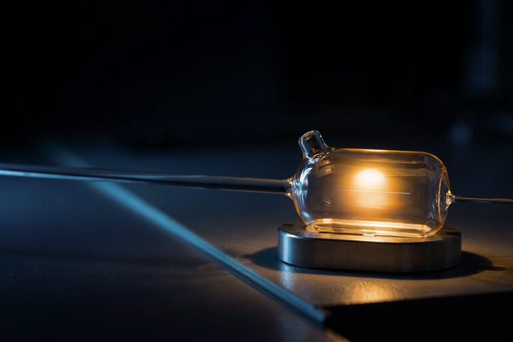<figcaption><div class="name">x_spectra_00001_</div><div class="tags"><span class="tag">Ideogram 4</span></div><dl><dt>seed</dt><dd>1094589231795111</dd><dt>steps</dt><dd>48</dd><dt>cfg</dt><dd>7.0</dd><dt>sampler</dt><dd>euler</dd><dt>scheduler</dt><dd>Ideogram4 mu=0.0 std=1.5</dd><dt>size</dt><dd>1536x1024</dd><dt>full</dt><dd>1536x1024 · 1365 KB</dd></dl><p class="note">Colour test: global 8-colour palette plus per-element palettes, with highlight and shadow both named as the guide asks.</p><details><summary>prompt</summary><pre>{&quot;high_level_description&quot;:&quot;A rubidium vapour cell glowing from within on a dark bench, its warm resonance light spilling across the surface while a cold laser beam enters it from the left.&quot;,&quot;style_description&quot;:{&quot;aesthetics&quot;:&quot;cinematic, high dynamic range, a single warm source against a cold field, deep shadow occupying most of the frame&quot;,&quot;lighting&quot;:&quot;the cell&#x27;s own interior glow is the key light and falls off quickly; a narrow cold beam grazes in from the left; ambient light is near zero&quot;,&quot;photo&quot;:&quot;85mm at f/1.8, shallow depth of field, the cell sharp and the background dissolving, faint lens bloom around the brightest core&quot;,&quot;medium&quot;:&quot;photograph&quot;,&quot;color_palette&quot;:[&quot;#05060A&quot;,&quot;#0C1220&quot;,&quot;#16304F&quot;,&quot;#1F5C86&quot;,&quot;#3E9BC4&quot;,&quot;#F2A93B&quot;,&quot;#FFD98A&quot;,&quot;#FFF3D6&quot;]},&quot;compositional_deconstruction&quot;:{&quot;background&quot;:&quot;A near-black bench surface receding into deep shadow, faint cold blue reflections tracing its edge, the background dissolving to pure black at the top of the frame.&quot;,&quot;elements&quot;:[{&quot;type&quot;:&quot;obj&quot;,&quot;bbox&quot;:[380,560,700,880],&quot;desc&quot;:&quot;A sealed borosilicate glass capsule lying on its side at the centre right, its interior filled with a soft warm amber glow that lights the glass wall from inside, a short fused stem projecting up from its shoulder, the brightest core of the glow sitting just below centre.&quot;,&quot;color_palette&quot;:[&quot;#F2A93B&quot;,&quot;#FFD98A&quot;,&quot;#FFF3D6&quot;,&quot;#8A5C1E&quot;]},{&quot;type&quot;:&quot;obj&quot;,&quot;bbox&quot;:[480,0,560,580],&quot;desc&quot;:&quot;A narrow cold blue beam of light entering from the left edge of the frame and running horizontally into the capsule, thin and hard-edged, with a faint scattering haze around it.&quot;,&quot;color_palette&quot;:[&quot;#3E9BC4&quot;,&quot;#1F5C86&quot;,&quot;#16304F&quot;]},{&quot;type&quot;:&quot;obj&quot;,&quot;bbox&quot;:[640,540,800,900],&quot;desc&quot;:&quot;A machined aluminium mount cradling the capsule, its top face catching the warm glow from above and its lower half falling into cold blue shadow.&quot;,&quot;color_palette&quot;:[&quot;#F2A93B&quot;,&quot;#16304F&quot;,&quot;#0C1220&quot;,&quot;#6E747C&quot;]},{&quot;type&quot;:&quot;obj&quot;,&quot;bbox&quot;:[690,420,900,1000],&quot;desc&quot;:&quot;The warm pool of light the capsule casts onto the bench surface beneath and in front of it, falling off sharply toward the frame edges.&quot;,&quot;color_palette&quot;:[&quot;#F2A93B&quot;,&quot;#8A5C1E&quot;,&quot;#05060A&quot;]}]}}</pre></details></figcaption></figure>
<figure data-group="ideogram-4">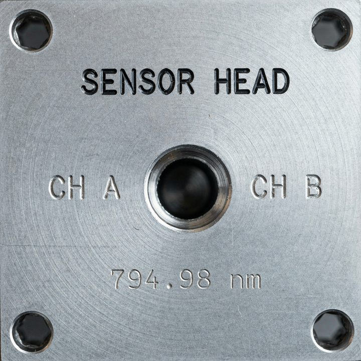<figcaption><div class="name">x_plate_00001_</div><div class="tags"><span class="tag">Ideogram 4</span></div><dl><dt>seed</dt><dd>3252841133019759</dd><dt>steps</dt><dd>48</dd><dt>cfg</dt><dd>7.0</dd><dt>sampler</dt><dd>euler</dd><dt>scheduler</dt><dd>Ideogram4 mu=0.0 std=1.5</dd><dt>size</dt><dd>1024x1024</dd><dt>full</dt><dd>1024x1024 · 2075 KB</dd></dl><p class="note">Text test: four literal strings rendered correctly, spelling and decimal point intact. This is the capability krea2 lacks entirely.</p><details><summary>prompt</summary><pre>{&quot;high_level_description&quot;:&quot;A machined aluminium instrument plate photographed square-on, its engraved panel legend and channel labels filling the surface around a central circular port.&quot;,&quot;style_description&quot;:{&quot;aesthetics&quot;:&quot;precise, industrial, archival equipment documentation, high microcontrast on brushed metal&quot;,&quot;lighting&quot;:&quot;broad even frontal light with one soft raking pass from the left so the brushed grain and the engraving depth both read&quot;,&quot;photo&quot;:&quot;100mm macro at f/11, sensor parallel to the plate, no perspective convergence, fine monochrome grain&quot;,&quot;medium&quot;:&quot;photograph&quot;,&quot;color_palette&quot;:[&quot;#121416&quot;,&quot;#2E3237&quot;,&quot;#5C626A&quot;,&quot;#9BA2AA&quot;,&quot;#CDD3D9&quot;,&quot;#EEF1F4&quot;]},&quot;compositional_deconstruction&quot;:{&quot;background&quot;:&quot;The brushed aluminium face of the plate fills the entire frame edge to edge, its fine horizontal grain running left to right, four counterbored fixing holes at the corners.&quot;,&quot;elements&quot;:[{&quot;type&quot;:&quot;obj&quot;,&quot;bbox&quot;:[400,400,640,640],&quot;desc&quot;:&quot;A circular port machined through the centre of the plate, its bore wall bright and its rim carrying one narrow chamfer, the dark interior of the housing visible through it.&quot;,&quot;color_palette&quot;:[&quot;#0D0F11&quot;,&quot;#79808A&quot;,&quot;#DDE2E7&quot;]},{&quot;type&quot;:&quot;text&quot;,&quot;bbox&quot;:[180,220,265,800],&quot;text&quot;:&quot;SENSOR HEAD&quot;,&quot;desc&quot;:&quot;Engraved into the plate across the upper area in a bold upright sans-serif, letters cut cleanly with dark shadowed grooves and bright upper edges, generously letter-spaced and centred.&quot;,&quot;color_palette&quot;:[&quot;#15181B&quot;,&quot;#B9C0C7&quot;]},{&quot;type&quot;:&quot;text&quot;,&quot;bbox&quot;:[480,130,545,330],&quot;text&quot;:&quot;CH A&quot;,&quot;desc&quot;:&quot;Engraved in a smaller upright sans-serif at the left, beside the central port, aligned to the port&#x27;s centre height.&quot;,&quot;color_palette&quot;:[&quot;#15181B&quot;,&quot;#B9C0C7&quot;]},{&quot;type&quot;:&quot;text&quot;,&quot;bbox&quot;:[480,690,545,890],&quot;text&quot;:&quot;CH B&quot;,&quot;desc&quot;:&quot;Engraved in the same smaller upright sans-serif at the right, mirroring the left label and aligned to the same centre height.&quot;,&quot;color_palette&quot;:[&quot;#15181B&quot;,&quot;#B9C0C7&quot;]},{&quot;type&quot;:&quot;text&quot;,&quot;bbox&quot;:[740,300,800,720],&quot;text&quot;:&quot;794.98 nm&quot;,&quot;desc&quot;:&quot;Engraved in a light upright sans-serif across the lower area, centred, smaller than the heading.&quot;,&quot;color_palette&quot;:[&quot;#15181B&quot;,&quot;#A8AFB7&quot;]}]}}</pre></details></figcaption></figure>
<figure data-group="ideogram-4">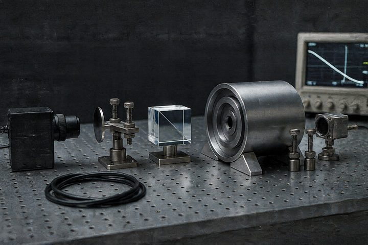<figcaption><div class="name">x_bench_00001_</div><div class="tags"><span class="tag">Ideogram 4</span></div><dl><dt>seed</dt><dd>1092042501350352</dd><dt>steps</dt><dd>48</dd><dt>cfg</dt><dd>7.0</dd><dt>sampler</dt><dd>euler</dd><dt>scheduler</dt><dd>Ideogram4 mu=0.0 std=1.5</dd><dt>size</dt><dd>1536x1024</dd><dt>full</dt><dd>1536x1024 · 2637 KB</dd></dl><p class="note">Complexity test: eight bbox-placed subjects in one scene. Seven held their positions; the oscilloscope trace is a monotonic decay rather than the decaying sinusoid asked for, so it does not depict an FID signal.</p><details><summary>prompt</summary><pre>{&quot;high_level_description&quot;:&quot;A full optically pumped magnetometer bench seen from a low three-quarter angle, a laser head firing along a line of mounted optics into a mu-metal shield with a detector and an oscilloscope beyond it.&quot;,&quot;style_description&quot;:{&quot;aesthetics&quot;:&quot;clinical, restrained, documentary laboratory record, deep quiet blacks with clean specular highlights&quot;,&quot;lighting&quot;:&quot;one large soft overhead source raking from the upper left across the breadboard, weak cool fill from the right, no visible lamps&quot;,&quot;photo&quot;:&quot;45mm tilt-shift at f/8, low camera close to the table surface, deep focus front to back, fine 400-speed monochrome film grain&quot;,&quot;medium&quot;:&quot;photograph&quot;,&quot;color_palette&quot;:[&quot;#0B0B0C&quot;,&quot;#1C1E21&quot;,&quot;#3A3E44&quot;,&quot;#6E747C&quot;,&quot;#A8AEB6&quot;,&quot;#D9DDE2&quot;,&quot;#F2F4F6&quot;]},&quot;compositional_deconstruction&quot;:{&quot;background&quot;:&quot;A black anodised optical breadboard filling the lower half of the frame, its regular grid of tapped mounting holes running to both edges and receding out of focus at the back, above it a dark featureless laboratory wall that falls away into black.&quot;,&quot;elements&quot;:[{&quot;type&quot;:&quot;obj&quot;,&quot;bbox&quot;:[430,20,700,220],&quot;desc&quot;:&quot;A rectangular laser head in a black anodised housing bolted flat to the breadboard at the far left, its output aperture facing right along the table, a knurled focus collar around the aperture and a braided cable leaving the back of the case.&quot;,&quot;color_palette&quot;:[&quot;#0E0F10&quot;,&quot;#2A2D31&quot;,&quot;#8C9299&quot;]},{&quot;type&quot;:&quot;obj&quot;,&quot;bbox&quot;:[400,250,690,375],&quot;desc&quot;:&quot;A kinematic mirror mount holding a round mirror at forty-five degrees, two knurled adjuster screws standing proud of its back plate, bolted to a short post clamped in a base.&quot;,&quot;color_palette&quot;:[&quot;#141618&quot;,&quot;#4A4F55&quot;,&quot;#C3C8CE&quot;]},{&quot;type&quot;:&quot;obj&quot;,&quot;bbox&quot;:[430,400,660,520],&quot;desc&quot;:&quot;A polarising beamsplitter cube of clear glass held in an open square mount, one fine diagonal cemented seam running corner to corner through the glass, catching a hard specular highlight on its front face.&quot;,&quot;color_palette&quot;:[&quot;#20242A&quot;,&quot;#9AA1A9&quot;,&quot;#EFF2F5&quot;]},{&quot;type&quot;:&quot;obj&quot;,&quot;bbox&quot;:[330,545,720,830],&quot;desc&quot;:&quot;A cylindrical mu-metal magnetic shield lying on its side on two V-blocks at the centre of the bench, its brushed grey surface curving away from the light, one open end facing the camera so three nested concentric cylinders are visible inside, a small dark aperture at the centre of the innermost one.&quot;,&quot;color_palette&quot;:[&quot;#17191C&quot;,&quot;#585E66&quot;,&quot;#B4BAC2&quot;]},{&quot;type&quot;:&quot;obj&quot;,&quot;bbox&quot;:[455,850,655,960],&quot;desc&quot;:&quot;A small photodiode detector in a machined aluminium housing standing just beyond the shield&#x27;s far end, its round window facing back toward the shield, a thin coaxial cable dropping from its base to the table.&quot;,&quot;color_palette&quot;:[&quot;#1A1C1F&quot;,&quot;#767D85&quot;,&quot;#D2D7DC&quot;]},{&quot;type&quot;:&quot;obj&quot;,&quot;bbox&quot;:[130,800,470,1000],&quot;desc&quot;:&quot;A benchtop oscilloscope standing on the table behind the optics at the right, its screen showing one bright clean sinusoidal trace decaying left to right across a faint graticule, a row of round control knobs beneath the screen.&quot;,&quot;color_palette&quot;:[&quot;#0C0D0F&quot;,&quot;#33383E&quot;,&quot;#E8ECF0&quot;]},{&quot;type&quot;:&quot;obj&quot;,&quot;bbox&quot;:[700,120,840,400],&quot;desc&quot;:&quot;A loose coil of black coaxial cable resting on the breadboard in the near foreground, its loops catching a soft highlight along the top.&quot;,&quot;color_palette&quot;:[&quot;#0A0A0B&quot;,&quot;#25282C&quot;]},{&quot;type&quot;:&quot;obj&quot;,&quot;bbox&quot;:[520,780,700,860],&quot;desc&quot;:&quot;Two knurled steel post holders standing empty on the breadboard between the shield and the detector, their clamping screws tightened.&quot;,&quot;color_palette&quot;:[&quot;#1E2126&quot;,&quot;#8F959C&quot;]}]}}</pre></details></figcaption></figure>
<figure data-group="ideogram-4 installed"><figcaption><div class="name">m_s2_mount_3_00001_</div><div class="tags"><span class="tag">Ideogram 4</span><span class="tag live">svc-2-vapour.png</span></div><dl><dt>seed</dt><dd>2002306702012535</dd><dt>steps</dt><dd>48</dd><dt>cfg</dt><dd>7.0</dd><dt>sampler</dt><dd>euler</dd><dt>scheduler</dt><dd>Ideogram4 mu=0.0 std=1.5</dd><dt>size</dt><dd>1024x1024</dd><dt>full</dt><dd>1024x1024 · 1064 KB</dd></dl><details><summary>prompt</summary><pre>{&quot;aspect_ratio&quot;:&quot;1:1&quot;,&quot;high_level_description&quot;:&quot;A sealed borosilicate glass cell seated in a machined aluminium holder on a pale grey studio sweep, black-and-white fine-grain macro photograph of laboratory hardware.&quot;,&quot;compositional_deconstruction&quot;:{&quot;background&quot;:&quot;A smooth pale grey seamless studio sweep, evenly lit, entirely featureless, with one soft contact shadow falling to the lower right.&quot;,&quot;elements&quot;:[{&quot;type&quot;:&quot;obj&quot;,&quot;bbox&quot;:[430,300,830,700],&quot;desc&quot;:&quot;One machined aluminium holder, a rectangular block with a circular seat milled into its top face and two counterbored fixing holes. Every face is clean bare satin aluminium, uniform and unmarked, carrying nothing but fine even face-mill witness marks, with one narrow chamfer along every edge. Rendered in monochrome.&quot;},{&quot;type&quot;:&quot;obj&quot;,&quot;bbox&quot;:[210,380,560,620],&quot;desc&quot;:&quot;One small sealed component of clear borosilicate laboratory glass sitting in the holder&#x27;s circular seat, a squat cylinder as wide as it is tall with a straight thin side wall, a flat base, and a top closing in one smooth continuous dome, forming a single unbroken sealed volume of glass with no opening anywhere; one short narrow stem rises at an angle from the shoulder and is drawn down to a rounded solid fused point. The glass is empty and clean, with true refraction against the aluminium. Rendered in monochrome.&quot;}]}}</pre></details></figcaption></figure>
<figure data-group="ideogram-4">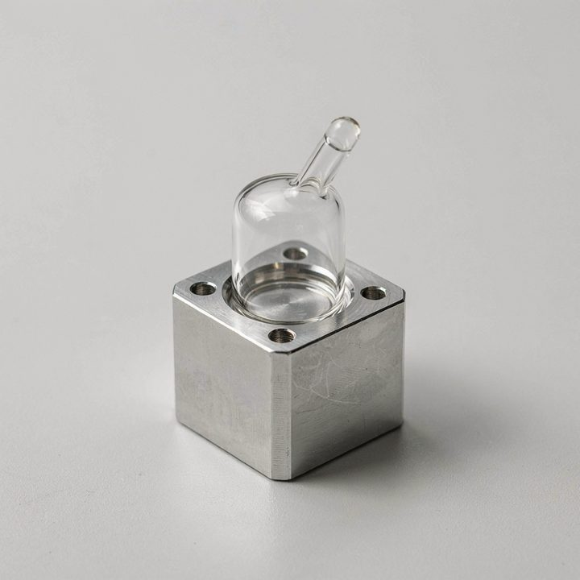<figcaption><div class="name">m_s2_mount_2_00001_</div><div class="tags"><span class="tag">Ideogram 4</span></div><dl><dt>seed</dt><dd>423430336078113</dd><dt>steps</dt><dd>48</dd><dt>cfg</dt><dd>7.0</dd><dt>sampler</dt><dd>euler</dd><dt>scheduler</dt><dd>Ideogram4 mu=0.0 std=1.5</dd><dt>size</dt><dd>1024x1024</dd><dt>full</dt><dd>1024x1024 · 1150 KB</dd></dl><p class="note">Rejected: the glass sits awkwardly over the mount&#x27;s edge.</p><details><summary>prompt</summary><pre>{&quot;aspect_ratio&quot;:&quot;1:1&quot;,&quot;high_level_description&quot;:&quot;A sealed borosilicate glass cell seated in a machined aluminium holder on a pale grey studio sweep, black-and-white fine-grain macro photograph of laboratory hardware.&quot;,&quot;compositional_deconstruction&quot;:{&quot;background&quot;:&quot;A smooth pale grey seamless studio sweep, evenly lit, entirely featureless, with one soft contact shadow falling to the lower right.&quot;,&quot;elements&quot;:[{&quot;type&quot;:&quot;obj&quot;,&quot;bbox&quot;:[430,300,830,700],&quot;desc&quot;:&quot;One machined aluminium holder, a rectangular block with a circular seat milled into its top face and two counterbored fixing holes. Every face is clean bare satin aluminium, uniform and unmarked, carrying nothing but fine even face-mill witness marks, with one narrow chamfer along every edge. Rendered in monochrome.&quot;},{&quot;type&quot;:&quot;obj&quot;,&quot;bbox&quot;:[210,380,560,620],&quot;desc&quot;:&quot;One small sealed component of clear borosilicate laboratory glass sitting in the holder&#x27;s circular seat, a squat cylinder as wide as it is tall with a straight thin side wall, a flat base, and a top closing in one smooth continuous dome, forming a single unbroken sealed volume of glass with no opening anywhere; one short narrow stem rises at an angle from the shoulder and is drawn down to a rounded solid fused point. The glass is empty and clean, with true refraction against the aluminium. Rendered in monochrome.&quot;}]}}</pre></details></figcaption></figure>
<figure data-group="ideogram-4">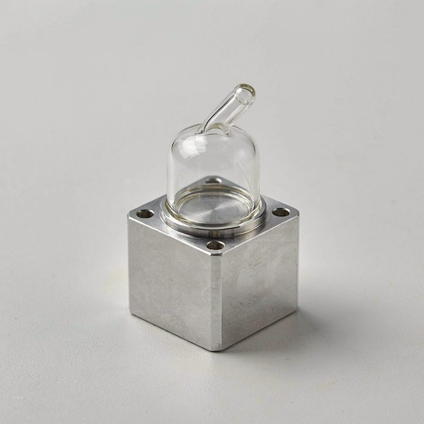<figcaption><div class="name">m_s2_mount_1_00001_</div><div class="tags"><span class="tag">Ideogram 4</span></div><dl><dt>seed</dt><dd>4753251463153969</dd><dt>steps</dt><dd>48</dd><dt>cfg</dt><dd>7.0</dd><dt>sampler</dt><dd>euler</dd><dt>scheduler</dt><dd>Ideogram4 mu=0.0 std=1.5</dd><dt>size</dt><dd>1024x1024</dd><dt>full</dt><dd>1024x1024 · 1150 KB</dd></dl><p class="note">Rejected: letter-like staining on the block&#x27;s side face.</p><details><summary>prompt</summary><pre>{&quot;aspect_ratio&quot;:&quot;1:1&quot;,&quot;high_level_description&quot;:&quot;A sealed borosilicate glass cell seated in a machined aluminium holder on a pale grey studio sweep, black-and-white fine-grain macro photograph of laboratory hardware.&quot;,&quot;compositional_deconstruction&quot;:{&quot;background&quot;:&quot;A smooth pale grey seamless studio sweep, evenly lit, entirely featureless, with one soft contact shadow falling to the lower right.&quot;,&quot;elements&quot;:[{&quot;type&quot;:&quot;obj&quot;,&quot;bbox&quot;:[430,300,830,700],&quot;desc&quot;:&quot;One machined aluminium holder, a rectangular block with a circular seat milled into its top face and two counterbored fixing holes. Every face is clean bare satin aluminium, uniform and unmarked, carrying nothing but fine even face-mill witness marks, with one narrow chamfer along every edge. Rendered in monochrome.&quot;},{&quot;type&quot;:&quot;obj&quot;,&quot;bbox&quot;:[210,380,560,620],&quot;desc&quot;:&quot;One small sealed component of clear borosilicate laboratory glass sitting in the holder&#x27;s circular seat, a squat cylinder as wide as it is tall with a straight thin side wall, a flat base, and a top closing in one smooth continuous dome, forming a single unbroken sealed volume of glass with no opening anywhere; one short narrow stem rises at an angle from the shoulder and is drawn down to a rounded solid fused point. The glass is empty and clean, with true refraction against the aluminium. Rendered in monochrome.&quot;}]}}</pre></details></figcaption></figure>
<figure data-group="ideogram-4">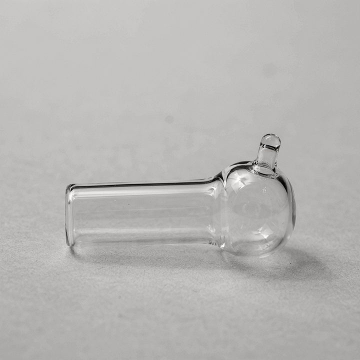<figcaption><div class="name">k_s2_d_side_00001_</div><div class="tags"><span class="tag">Ideogram 4</span></div><dl><dt>seed</dt><dd>5419707027443564</dd><dt>steps</dt><dd>48</dd><dt>cfg</dt><dd>7.0</dd><dt>sampler</dt><dd>euler</dd><dt>scheduler</dt><dd>Ideogram4 mu=0.0 std=1.5</dd><dt>size</dt><dd>1024x1024</dd><dt>full</dt><dd>1024x1024 · 1124 KB</dd></dl><p class="note">Passed the filter but rejected: the left end reads as open.</p><details><summary>prompt</summary><pre>{&quot;aspect_ratio&quot;:&quot;1:1&quot;,&quot;high_level_description&quot;:&quot;A small sealed borosilicate glass component lying on its side on a pale grey studio sweep, black-and-white fine-grain macro photograph of scientific glassware.&quot;,&quot;compositional_deconstruction&quot;:{&quot;background&quot;:&quot;A smooth pale grey seamless studio sweep, evenly lit, entirely featureless, with one soft contact shadow falling to the lower right.&quot;,&quot;elements&quot;:[{&quot;type&quot;:&quot;obj&quot;,&quot;bbox&quot;:[380,180,720,820],&quot;desc&quot;:&quot;One small sealed component of clear borosilicate laboratory glass lying on its side with its axis running horizontally across the frame, a squat cylinder with a straight thin side wall, one flat closed end facing left and a smoothly domed closed end facing right, forming a single unbroken sealed volume of glass with no opening anywhere. One short narrow stem projects upward from the shoulder near the domed end, drawn to a rounded solid fused point. A faint fusion seam marks where the glass was closed. True refraction and a caustic pooling on the sweep beneath it. Rendered in monochrome.&quot;}]}}</pre></details></figcaption></figure>
<figure data-group="ideogram-4">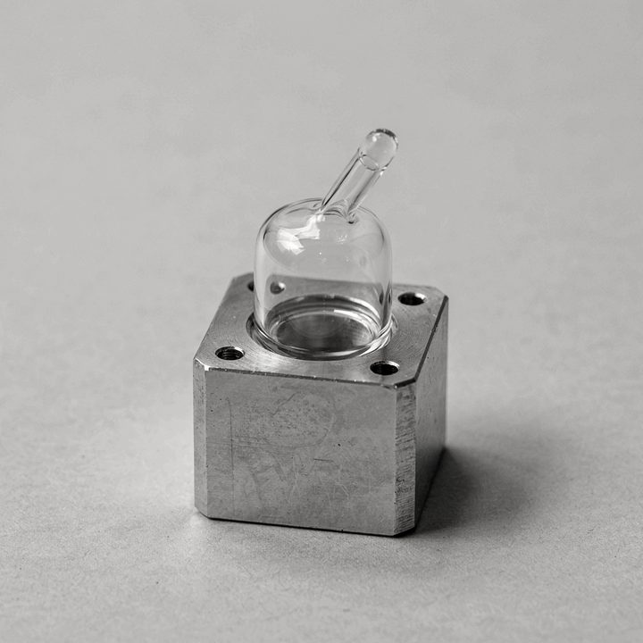<figcaption><div class="name">k_s2_c_mount_00001_</div><div class="tags"><span class="tag">Ideogram 4</span></div><dl><dt>seed</dt><dd>3106522954881276</dd><dt>steps</dt><dd>48</dd><dt>cfg</dt><dd>7.0</dd><dt>sampler</dt><dd>euler</dd><dt>scheduler</dt><dd>Ideogram4 mu=0.0 std=1.5</dd><dt>size</dt><dd>1024x1024</dd><dt>full</dt><dd>1024x1024 · 1271 KB</dd></dl><details><summary>prompt</summary><pre>{&quot;aspect_ratio&quot;:&quot;1:1&quot;,&quot;high_level_description&quot;:&quot;A sealed borosilicate glass cell seated in a machined aluminium holder on a pale grey studio sweep, black-and-white fine-grain macro photograph of laboratory hardware.&quot;,&quot;compositional_deconstruction&quot;:{&quot;background&quot;:&quot;A smooth pale grey seamless studio sweep, evenly lit, entirely featureless, with one soft contact shadow falling to the lower right.&quot;,&quot;elements&quot;:[{&quot;type&quot;:&quot;obj&quot;,&quot;bbox&quot;:[430,300,830,700],&quot;desc&quot;:&quot;One machined aluminium holder, a rectangular block with a circular seat milled into its top face and two counterbored fixing holes, its bare satin surface carrying fine face-mill witness marks and one narrow chamfer along every edge. Rendered in monochrome.&quot;},{&quot;type&quot;:&quot;obj&quot;,&quot;bbox&quot;:[210,380,560,620],&quot;desc&quot;:&quot;One small sealed component of clear borosilicate laboratory glass sitting in the holder&#x27;s circular seat, a squat cylinder as wide as it is tall with a straight thin side wall, a flat base, and a top closing in one smooth continuous dome, forming a single unbroken sealed volume of glass with no opening anywhere; one short narrow stem rises at an angle from the shoulder and is drawn down to a rounded solid fused point. The glass is empty and clean, with true refraction against the aluminium. Rendered in monochrome.&quot;}]}}</pre></details></figcaption></figure>
<figure data-group="ideogram-4">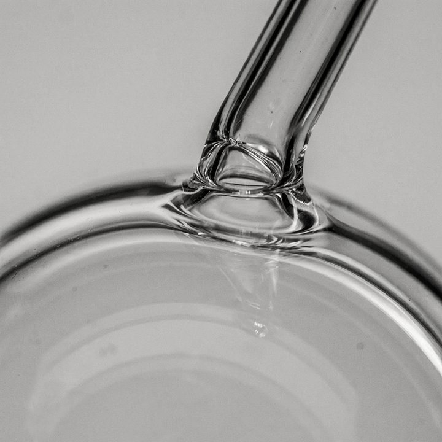<figcaption><div class="name">k_s2_b_crop_00001_</div><div class="tags"><span class="tag">Ideogram 4</span></div><dl><dt>seed</dt><dd>767029380704892</dd><dt>steps</dt><dd>48</dd><dt>cfg</dt><dd>7.0</dd><dt>sampler</dt><dd>euler</dd><dt>scheduler</dt><dd>Ideogram4 mu=0.0 std=1.5</dd><dt>size</dt><dd>1024x1024</dd><dt>full</dt><dd>1024x1024 · 1493 KB</dd></dl><p class="note">Passed the filter but rejected: beautiful refraction, unreadable as a vapour cell at 210px.</p><details><summary>prompt</summary><pre>{&quot;aspect_ratio&quot;:&quot;1:1&quot;,&quot;high_level_description&quot;:&quot;An extreme macro detail of the fused shoulder and drawn stem of a sealed borosilicate glass component, cropped by the frame, black-and-white fine-grain photograph.&quot;,&quot;compositional_deconstruction&quot;:{&quot;background&quot;:&quot;A pale grey out-of-focus studio sweep behind the glass, filling the upper third of the frame.&quot;,&quot;elements&quot;:[{&quot;type&quot;:&quot;obj&quot;,&quot;bbox&quot;:[0,0,1000,1000],&quot;desc&quot;:&quot;The upper shoulder of a piece of clear borosilicate laboratory glass in extreme macro, so close that the component runs off the bottom and both sides of the frame. A smooth continuous glass dome curves across the lower half, and one short narrow stem rises from it at an angle, drawn down to a rounded solid fused point with a faint fusion seam where the glass was closed. The glass wall thickness reads clearly at the curved edge, with true refraction and one bright specular streak along the dome. Rendered in monochrome.&quot;}]}}</pre></details></figcaption></figure>
<figure data-group="ideogram-4 blocked">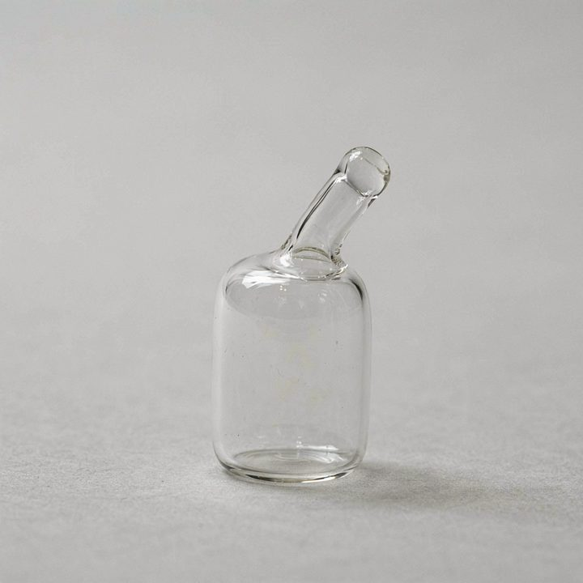<figcaption><div class="name">k_s2_a_plain_00001_</div><div class="tags"><span class="tag">Ideogram 4</span><span class="tag blocked">refused</span></div><dl><dt>seed</dt><dd>8784325522457294</dd><dt>steps</dt><dd>48</dd><dt>cfg</dt><dd>7.0</dd><dt>sampler</dt><dd>euler</dd><dt>scheduler</dt><dd>Ideogram4 mu=0.0 std=1.5</dd><dt>size</dt><dd>1024x1024</dd><dt>full</dt><dd>1024x1024 · 1175 KB</dd></dl><p class="note">The control: plainest possible wording, upright full silhouette. Refused, while the cropped, mounted and lying-down variants of the same subject all passed. The filter judges the rendered image, not only the text.</p><details><summary>prompt</summary><pre>{&quot;aspect_ratio&quot;:&quot;1:1&quot;,&quot;high_level_description&quot;:&quot;A small sealed blown-glass component standing upright on a pale grey studio sweep, black-and-white fine-grain macro photograph of scientific glassware.&quot;,&quot;compositional_deconstruction&quot;:{&quot;background&quot;:&quot;A smooth pale grey seamless studio sweep, evenly lit, entirely featureless, with one soft contact shadow falling to the lower right.&quot;,&quot;elements&quot;:[{&quot;type&quot;:&quot;obj&quot;,&quot;bbox&quot;:[260,330,830,670],&quot;desc&quot;:&quot;One small sealed component of clear borosilicate laboratory glass standing upright, a squat cylinder as wide as it is tall with a straight thin side wall, a flat base, and a top closing in one smooth continuous dome, forming a single unbroken sealed volume of glass with no opening anywhere; one short narrow stem rises at an angle from the shoulder and is drawn down to a rounded solid fused point. A faint fusion seam marks where the glass was closed. The glass is empty and clean. Rendered in monochrome.&quot;}]}}</pre></details></figcaption></figure>
<figure data-group="ideogram-4 installed"><figcaption><div class="name">k_s5_pipeline_00001_</div><div class="tags"><span class="tag">Ideogram 4</span><span class="tag live">svc-5-inspection.png</span></div><dl><dt>seed</dt><dd>6477864860046536</dd><dt>steps</dt><dd>48</dd><dt>cfg</dt><dd>7.0</dd><dt>sampler</dt><dd>euler</dd><dt>scheduler</dt><dd>Ideogram4 mu=0.0 std=1.5</dd><dt>size</dt><dd>1024x1024</dd><dt>full</dt><dd>1024x1024 · 1834 KB</dd></dl><details><summary>prompt</summary><pre>{&quot;aspect_ratio&quot;:&quot;1:1&quot;,&quot;high_level_description&quot;:&quot;An overhead macro close-up of identical turned steel parts standing in a black foam inspection tray, the grid running off every edge of the frame with one pocket left empty, black-and-white fine-grain photograph.&quot;,&quot;compositional_deconstruction&quot;:{&quot;background&quot;:&quot;Dense matte black foam fills the entire frame, seen square-on from directly overhead, its milled pockets running past all four frame edges.&quot;,&quot;elements&quot;:[{&quot;type&quot;:&quot;obj&quot;,&quot;bbox&quot;:[0,0,1000,1000],&quot;desc&quot;:&quot;A field of identical short stepped turned steel cylinders standing on end in the milled pockets of a dense matte black foam tray, seen from directly overhead. The rows run parallel to the frame edges and continue past all four edges, cut off by the frame on every side so neither the tray rim nor the extent of the batch is visible. Every part stands at the same height and the same orientation, each with a bright polished top face carrying fine concentric lathe marks and one small concentric bore at its centre. One pocket left of the frame centre is empty, its bare foam floor visible, the part that belongs there removed for measurement. A small crisp shadow sits inside every pocket. Rendered in monochrome.&quot;}]}}</pre></details></figcaption></figure>
<figure data-group="ideogram-4 installed"><figcaption><div class="name">k_s3_cad_00001_</div><div class="tags"><span class="tag">Ideogram 4</span><span class="tag live">svc-3-machining.png</span></div><dl><dt>seed</dt><dd>8352767430678811</dd><dt>steps</dt><dd>48</dd><dt>cfg</dt><dd>7.0</dd><dt>sampler</dt><dd>euler</dd><dt>scheduler</dt><dd>Ideogram4 mu=0.0 std=1.5</dd><dt>size</dt><dd>1024x1024</dd><dt>full</dt><dd>1024x1024 · 1477 KB</dd></dl><details><summary>prompt</summary><pre>{&quot;aspect_ratio&quot;:&quot;1:1&quot;,&quot;high_level_description&quot;:&quot;An extreme macro close-up across the finish-milled face of an aluminium part, its counterbored holes running out past the frame edge, black-and-white fine-grain product photograph.&quot;,&quot;compositional_deconstruction&quot;:{&quot;background&quot;:&quot;The milled aluminium face itself fills the whole frame, falling out of focus toward the top where a pale grey studio sweep shows in a narrow band.&quot;,&quot;elements&quot;:[{&quot;type&quot;:&quot;obj&quot;,&quot;bbox&quot;:[120,0,1000,1000],&quot;desc&quot;:&quot;The top face of a bare satin aluminium part seen in extreme macro from a low raking angle, so close that the part&#x27;s outline is far outside the frame. The surface is covered in fine regular overlapping arcs of face-mill witness marks catching the raking light as parallel highlights. A shallow circular pocket with a clean vertical wall and a flat floor sits at the lower left. Counterbored holes with crisp unbroken edges curve away from that pocket toward the upper right and continue off the right edge of the frame, the nearest hole sharp and the farthest already soft. One narrow uniform chamfer runs along a machined step crossing the lower right corner. No tool touches the part. Rendered in monochrome.&quot;}]}}</pre></details></figcaption></figure>
<figure data-group="ideogram-4">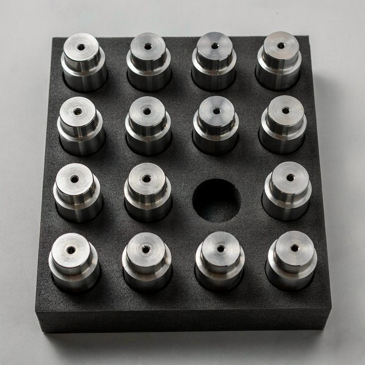<figcaption><div class="name">j_s5_pipeline_00001_</div><div class="tags"><span class="tag">Ideogram 4</span></div><dl><dt>seed</dt><dd>1757895236711181</dd><dt>steps</dt><dd>48</dd><dt>cfg</dt><dd>7.0</dd><dt>sampler</dt><dd>euler</dd><dt>scheduler</dt><dd>Ideogram4 mu=0.0 std=1.5</dd><dt>size</dt><dd>1024x1024</dd><dt>full</dt><dd>1024x1024 · 1746 KB</dd></dl><p class="note">Rejected: asked for a five-by-five grid, got four-by-four.</p><details><summary>prompt</summary><pre>{&quot;aspect_ratio&quot;:&quot;1:1&quot;,&quot;high_level_description&quot;:&quot;A shallow black foam inspection tray seen from directly overhead holding a five-by-five grid of identical turned steel parts with one pocket left empty, black-and-white fine-grain macro photograph.&quot;,&quot;compositional_deconstruction&quot;:{&quot;background&quot;:&quot;A smooth pale grey seamless studio sweep, evenly lit, entirely featureless, with one soft contact shadow falling to the lower right.&quot;,&quot;elements&quot;:[{&quot;type&quot;:&quot;obj&quot;,&quot;bbox&quot;:[90,90,910,910],&quot;desc&quot;:&quot;One shallow rectangular tray of dense matte black foam, seen square-on from directly overhead, milled with a regular grid of pockets five across and five deep running parallel to the frame edges. Twenty-four pockets each hold one identical short stepped turned steel cylinder standing on end, every part at the same height and the same orientation, each with a bright polished top face carrying fine concentric lathe marks and one small concentric bore through its centre, so the top faces form an even grid of bright discs against the black foam. The single pocket at the exact centre of the grid is empty, its bare foam floor visible, the part that belongs there removed for measurement. A small crisp shadow sits inside every pocket. Rendered in monochrome.&quot;}]}}</pre></details></figcaption></figure>
<figure data-group="ideogram-4 installed"><figcaption><div class="name">j_s4_signal_00001_</div><div class="tags"><span class="tag">Ideogram 4</span><span class="tag live">svc-4-detectors.png</span></div><dl><dt>seed</dt><dd>6868208227789809</dd><dt>steps</dt><dd>48</dd><dt>cfg</dt><dd>7.0</dd><dt>sampler</dt><dd>euler</dd><dt>scheduler</dt><dd>Ideogram4 mu=0.0 std=1.5</dd><dt>size</dt><dd>1024x1024</dd><dt>full</dt><dd>1024x1024 · 1365 KB</dd></dl><details><summary>prompt</summary><pre>{&quot;aspect_ratio&quot;:&quot;1:1&quot;,&quot;high_level_description&quot;:&quot;Two identical metal-can photodiode detectors standing upright side by side on a pale grey studio sweep, black-and-white fine-grain macro product photograph of matched electronic components.&quot;,&quot;compositional_deconstruction&quot;:{&quot;background&quot;:&quot;A smooth pale grey seamless studio sweep, evenly lit, entirely featureless, with one soft contact shadow falling to the lower right.&quot;,&quot;elements&quot;:[{&quot;type&quot;:&quot;obj&quot;,&quot;bbox&quot;:[300,190,800,450],&quot;desc&quot;:&quot;One small cylindrical nickel-plated metal photodiode package standing upright, its rolled rim catching a bright ring highlight, closed by a flat glass window through which one square matte dark silicon die is clearly visible with two hairline bond wires arcing from its corners to the package wall, three straight metal leads dropping from its base out of the bottom of the frame. Rendered in monochrome.&quot;},{&quot;type&quot;:&quot;obj&quot;,&quot;bbox&quot;:[300,550,800,810],&quot;desc&quot;:&quot;A second photodiode package identical to the first in height, diameter, rim, window and die size, standing upright at the same height and lit identically, its three straight metal leads dropping from its base out of the bottom of the frame. Rendered in monochrome.&quot;}]}}</pre></details></figcaption></figure>
<figure data-group="ideogram-4"><figcaption><div class="name">j_s3_cad_00001_</div><div class="tags"><span class="tag">Ideogram 4</span></div><dl><dt>seed</dt><dd>7756630384001933</dd><dt>steps</dt><dd>48</dd><dt>cfg</dt><dd>7.0</dd><dt>sampler</dt><dd>euler</dd><dt>scheduler</dt><dd>Ideogram4 mu=0.0 std=1.5</dd><dt>size</dt><dd>1024x1024</dd><dt>full</dt><dd>1024x1024 · 1386 KB</dd></dl><p class="note">Rejected: asked for exactly six counterbores, got eight — the second time that count came out wrong.</p><details><summary>prompt</summary><pre>{&quot;aspect_ratio&quot;:&quot;1:1&quot;,&quot;high_level_description&quot;:&quot;A finish-machined rectangular aluminium block resting on a pale grey studio sweep, its top face carrying a circular pocket ringed by six identical counterbored holes, black-and-white fine-grain macro product photograph.&quot;,&quot;compositional_deconstruction&quot;:{&quot;background&quot;:&quot;A smooth pale grey seamless studio sweep, evenly lit, entirely featureless, with one soft contact shadow falling to the lower right.&quot;,&quot;elements&quot;:[{&quot;type&quot;:&quot;obj&quot;,&quot;bbox&quot;:[330,120,800,880],&quot;desc&quot;:&quot;One rectangular block of bare satin aluminium, wider than it is tall, sitting flat and seen from forty degrees above so its top face and one side wall are both fully visible. The top face is finish-milled into a smooth surface covered in fine regular overlapping arcs of face-mill witness marks, with one shallow circular pocket at its centre that has a clean vertical wall and a flat floor. Exactly six counterbored holes, all the same diameter and the same depth, sit on one bolt circle around that pocket at equal angles. Three identical stepped shoulders of decreasing height run along the front edge, each step the same width as the last. Every outer edge is straight and carries one narrow uniform chamfer. No tool touches the part. Rendered in monochrome.&quot;}]}}</pre></details></figcaption></figure>
<figure data-group="ideogram-4 blocked"><figcaption><div class="name">j_s2_cell_00001_</div><div class="tags"><span class="tag">Ideogram 4</span><span class="tag blocked">refused</span></div><dl><dt>seed</dt><dd>1620310384737511</dd><dt>steps</dt><dd>48</dd><dt>cfg</dt><dd>7.0</dd><dt>sampler</dt><dd>euler</dd><dt>scheduler</dt><dd>Ideogram4 mu=0.0 std=1.5</dd><dt>size</dt><dd>1024x1024</dd><dt>full</dt><dd>1024x1024 · 1315 KB</dd></dl><p class="note">Refused even as structured JSON, while the other four in the same batch passed — so form was not this one&#x27;s whole cause.</p><details><summary>prompt</summary><pre>{&quot;aspect_ratio&quot;:&quot;1:1&quot;,&quot;high_level_description&quot;:&quot;A sealed borosilicate glass ampoule standing upright on a pale grey studio sweep, black-and-white fine-grain macro photograph of laboratory glassware.&quot;,&quot;compositional_deconstruction&quot;:{&quot;background&quot;:&quot;A smooth pale grey seamless studio sweep, evenly lit, entirely featureless, with one soft contact shadow falling to the lower right.&quot;,&quot;elements&quot;:[{&quot;type&quot;:&quot;obj&quot;,&quot;bbox&quot;:[260,330,830,670],&quot;desc&quot;:&quot;A flame-sealed borosilicate glass capsule standing upright, a squat cylinder as wide as it is tall, with a straight thin side wall, a flat base, and a top that closes in one smooth continuous dome, forming a single unbroken sealed volume of glass with no opening anywhere. One short narrow tip-off stem rises at an angle from the shoulder where the dome meets the wall and is drawn down to a rounded solid fused point, a faint fusion seam marking where the glass was closed. One tiny bright bead of condensed metal rests in the bottom corner and a faint metallic film clouds one small patch of the inner wall. Rendered in monochrome.&quot;}]}}</pre></details></figcaption></figure>
<figure data-group="ideogram-4 installed"><figcaption><div class="name">j_s1_optics_00001_</div><div class="tags"><span class="tag">Ideogram 4</span><span class="tag live">svc-1-optics.png</span></div><dl><dt>seed</dt><dd>7685860265279240</dd><dt>steps</dt><dd>48</dd><dt>cfg</dt><dd>7.0</dd><dt>sampler</dt><dd>euler</dd><dt>scheduler</dt><dd>Ideogram4 mu=0.0 std=1.5</dd><dt>size</dt><dd>1024x1024</dd><dt>full</dt><dd>1024x1024 · 1291 KB</dd></dl><details><summary>prompt</summary><pre>{&quot;aspect_ratio&quot;:&quot;1:1&quot;,&quot;high_level_description&quot;:&quot;A right-angle glass prism and a polarising beamsplitter cube standing side by side on a pale grey studio sweep, black-and-white fine-grain macro product photograph.&quot;,&quot;compositional_deconstruction&quot;:{&quot;background&quot;:&quot;A smooth pale grey seamless studio sweep, evenly lit, entirely featureless, with one soft contact shadow falling to the lower right.&quot;,&quot;elements&quot;:[{&quot;type&quot;:&quot;obj&quot;,&quot;bbox&quot;:[420,190,770,470],&quot;desc&quot;:&quot;A right-angle prism of water-clear optical glass resting on one square face, its 45-degree hypotenuse turned toward the camera and working as a mirror, every ground edge carrying one narrow uniform bevel that catches a bright hairline, a sharp caustic pooling on the sweep beneath it, rendered in monochrome.&quot;},{&quot;type&quot;:&quot;obj&quot;,&quot;bbox&quot;:[420,500,770,780],&quot;desc&quot;:&quot;A polarising beamsplitter cube of water-clear optical glass the same height as the prism, built from two right-angle prisms cemented together so one fine straight diagonal seam runs corner to corner through the glass and stays visible from the front, its outer faces darkened evenly by an anti-reflection coating, rendered in monochrome.&quot;}]}}</pre></details></figcaption></figure>
<figure data-group="ideogram-4 blocked"><figcaption><div class="name">ig2_s4_signal_00001_</div><div class="tags"><span class="tag">Ideogram 4</span><span class="tag blocked">refused</span></div><dl><dt>seed</dt><dd>4569656076375311</dd><dt>steps</dt><dd>48</dd><dt>cfg</dt><dd>7.0</dd><dt>sampler</dt><dd>euler</dd><dt>scheduler</dt><dd>Ideogram4 mu=0.0 std=1.5</dd><dt>size</dt><dd>1024x1024</dd><dt>full</dt><dd>1024x1024 · 211 KB</dd></dl><p class="note">Refused again without a negative prompt.</p><details><summary>prompt</summary><pre>Use case: photorealistic-product
Asset type: figure image for the service row FIG. 004 / SIGNAL AND VALIDATION
Primary request: A precise studio close-up of a matched pair of photodiode detectors, the two halves of a balanced detector, photographed head-on as components.
Subject: Two identical metal-can photodiodes standing upright side by side, mirror-symmetric about the centre of the frame and separated by a narrow even gap. Each is a small cylindrical metal package with a rolled rim, closed by a flat glass window through which the square semiconductor die is clearly visible, dark and flat, with two hairline bond wires arcing from its corners to the package wall. Below each can, three straight metal leads drop down out of the bottom of the frame. The two units are visibly identical in height, diameter and die size, and are lit identically.
Composition/framing: Square frame, straight-on view at the height of the windows, the pair centred and together filling about 60 percent of the width, the gap between them exactly on the centre line.
Materials/textures: Brushed nickel-plated metal cans with a fine circular grain, a bright ring highlight on each rolled rim, a flat specular sheet across each glass window, matte dark silicon die.
Style/medium: Square black-and-white editorial macro photograph, large-format sharpness, fine monochrome film grain, crisp contrast, deep blacks and clean highlights, no colour.
Scene/backdrop: A light dove-grey seamless studio sweep, smooth and featureless, the subject sitting on it with a soft contact shadow.
Lighting/mood: One large soft key from the upper left raking across the subject, a weak fill from the right, quiet and clinical.</pre></details></figcaption></figure>
<figure data-group="ideogram-4 blocked"><figcaption><div class="name">ig2_s2_cell_00001_</div><div class="tags"><span class="tag">Ideogram 4</span><span class="tag blocked">refused</span></div><dl><dt>seed</dt><dd>8829079402248716</dd><dt>steps</dt><dd>48</dd><dt>cfg</dt><dd>7.0</dd><dt>sampler</dt><dd>euler</dd><dt>scheduler</dt><dd>Ideogram4 mu=0.0 std=1.5</dd><dt>size</dt><dd>1024x1024</dd><dt>full</dt><dd>1024x1024 · 328 KB</dd></dl><p class="note">Refused again without a negative prompt.</p><details><summary>prompt</summary><pre>Use case: photorealistic-product
Asset type: figure image for the service row FIG. 002 / ATOMIC PHYSICS
Primary request: A precise studio close-up of a hermetically sealed alkali vapour cell, a single piece of laboratory glassware, photographed as a component.
Subject: One flame-sealed borosilicate glass capsule standing upright on the sweep, a squat cylinder roughly as wide as it is tall. Its side wall is straight and thin-walled; its top closes in a smooth continuous dome, and its base is flat. The glass is one unbroken sealed volume, with no opening anywhere. A short narrow tip-off stem rises at an angle from the shoulder where the dome meets the wall, drawn down to a rounded solid fused point, with a faint fusion seam where the glass was closed. Inside, a single tiny bright bead of condensed alkali metal rests in the bottom corner, and a very faint metallic film clouds one small patch of the inner wall.
Composition/framing: Square frame, three-quarter view from slightly above, the capsule centred and filling about 55 percent of the frame height, generous empty sweep around it.
Materials/textures: Thin-walled laboratory glass with visible wall thickness at the rim of the base, true refraction, a bright specular streak down the shoulder, a soft caustic under the base.
Style/medium: Square black-and-white editorial macro photograph, large-format sharpness, fine monochrome film grain, crisp contrast, deep blacks and clean highlights, no colour.
Scene/backdrop: A light dove-grey seamless studio sweep, smooth and featureless, the subject sitting on it with a soft contact shadow.
Lighting/mood: One large soft key from the upper left raking across the subject, a weak fill from the right, quiet and clinical.</pre></details></figcaption></figure>
<figure data-group="ideogram-4 blocked"><figcaption><div class="name">ig2_s1_optics_00001_</div><div class="tags"><span class="tag">Ideogram 4</span><span class="tag blocked">refused</span></div><dl><dt>seed</dt><dd>7639139427138037</dd><dt>steps</dt><dd>48</dd><dt>cfg</dt><dd>7.0</dd><dt>sampler</dt><dd>euler</dd><dt>scheduler</dt><dd>Ideogram4 mu=0.0 std=1.5</dd><dt>size</dt><dd>1024x1024</dd><dt>full</dt><dd>1024x1024 · 188 KB</dd></dl><p class="note">Refused again with the negative prompt removed — which ruled out my first theory that the negative text tripped the filter.</p><details><summary>prompt</summary><pre>Use case: photorealistic-product
Asset type: figure image for the service row FIG. 001 / OPTICAL PATH
Primary request: A precise studio close-up of two bulk optical components used to split and fold a laser beam, photographed as laboratory hardware.
Subject: Two pieces of polished optical glass standing on the sweep, side by side and touching along their bases. On the left, a right-angle prism resting on one square face, its 45-degree hypotenuse turned toward the camera so it works as a mirror and throws a compressed reflection of the sweep across itself; its three ground edges carry a narrow uniform protective bevel and its polished faces are flawless. On the right, a polarising beamsplitter cube of the same height, formed from two right-angle prisms cemented together, so a single fine straight diagonal seam runs corner to corner through the glass and is visible from the front; its outer faces carry an anti-reflection coating that reads as a faint even darkening against the bright sweep.
Composition/framing: Square frame. The pair sits centred and slightly below the middle, together filling about 60 percent of the width, seen from just above eye level so the top faces are foreshortened into thin bright bands.
Materials/textures: Water-clear optical glass with true refraction, internal total reflection off the hypotenuse, sharp caustics pooling on the sweep beneath each piece, hairline bevels catching a bright line.
Style/medium: Square black-and-white editorial macro photograph, large-format sharpness, fine monochrome film grain, crisp contrast, deep blacks and clean highlights, no colour.
Scene/backdrop: A light dove-grey seamless studio sweep, smooth and featureless, the subject sitting on it with a soft contact shadow.
Lighting/mood: One large soft key from the upper left raking across the subject, a weak fill from the right, quiet and clinical.</pre></details></figcaption></figure>
<figure data-group="ideogram-4"><figcaption><div class="name">ig_s5_pipeline_00001_</div><div class="tags"><span class="tag">Ideogram 4</span></div><dl><dt>seed</dt><dd>1118011702493083</dd><dt>steps</dt><dd>48</dd><dt>cfg</dt><dd>7.0</dd><dt>sampler</dt><dd>euler</dd><dt>scheduler</dt><dd>Ideogram4 mu=0.0 std=1.5</dd><dt>size</dt><dd>1024x1024</dd><dt>full</dt><dd>1024x1024 · 1880 KB</dd></dl><details><summary>prompt</summary><pre>Use case: photorealistic-product
Asset type: figure image for the service row FIG. 005 / SUPERVISED PIPELINE
Primary request: A precise studio close-up looking straight down at a batch of identical machined parts laid out for inspection, every one of them checked.
Subject: A shallow rectangular inspection tray of matte black foam, its rim filling the frame, milled with a regular grid of pockets five across and five deep. Twenty-four of the twenty-five pockets each hold one identical turned metal part, a short stepped cylinder standing on end with a bright polished top face and a small concentric bore through its centre. Every part sits at the same height and the same orientation, so the polished top faces form an even grid of bright discs against the black foam. One pocket, in the middle of the grid, is empty, its bare foam floor visible, the part that belongs there taken out for measurement.
Composition/framing: Square frame, camera directly overhead and square to the tray, the tray centred and filling about 85 percent of the frame, the grid running parallel to the frame edges.
Materials/textures: Dense matte black foam that swallows the light, bright turned steel with fine concentric lathe marks on every top face, a small crisp shadow inside each pocket.
Style/medium: Square black-and-white editorial macro photograph, large-format sharpness, fine monochrome film grain, crisp contrast, deep blacks and clean highlights, no colour.
Scene/backdrop: A light dove-grey seamless studio sweep, smooth and featureless, the subject sitting on it with a soft contact shadow.
Lighting/mood: One large soft key from the upper left raking across the subject, a weak fill from the right, quiet and clinical.</pre></details><details><summary>negative</summary><pre>colour, colour cast, text, lettering, numbers, digits, engraved scale, graduation marks, logo, brand name, watermark, signature, hands, people, cluttered background, props, blur, soft focus, low detail, plastic toy look, cartoon, illustration, render, CGI, eggs, egg carton, muffin tin, baking tray, food, chocolate, bolts, screws, ammunition, bullets, uneven spacing, random arrangement, tilted parts, all pockets full</pre></details></figcaption></figure>
<figure data-group="ideogram-4 blocked"><figcaption><div class="name">ig_s4_signal_00001_</div><div class="tags"><span class="tag">Ideogram 4</span><span class="tag blocked">refused</span></div><dl><dt>seed</dt><dd>6278957566357238</dd><dt>steps</dt><dd>48</dd><dt>cfg</dt><dd>7.0</dd><dt>sampler</dt><dd>euler</dd><dt>scheduler</dt><dd>Ideogram4 mu=0.0 std=1.5</dd><dt>size</dt><dd>1024x1024</dd><dt>full</dt><dd>1024x1024 · 210 KB</dd></dl><p class="note">Refused. Same plain-text form.</p><details><summary>prompt</summary><pre>Use case: photorealistic-product
Asset type: figure image for the service row FIG. 004 / SIGNAL AND VALIDATION
Primary request: A precise studio close-up of a matched pair of photodiode detectors, the two halves of a balanced detector, photographed head-on as components.
Subject: Two identical metal-can photodiodes standing upright side by side, mirror-symmetric about the centre of the frame and separated by a narrow even gap. Each is a small cylindrical metal package with a rolled rim, closed by a flat glass window through which the square semiconductor die is clearly visible, dark and flat, with two hairline bond wires arcing from its corners to the package wall. Below each can, three straight metal leads drop down out of the bottom of the frame. The two units are visibly identical in height, diameter and die size, and are lit identically.
Composition/framing: Square frame, straight-on view at the height of the windows, the pair centred and together filling about 60 percent of the width, the gap between them exactly on the centre line.
Materials/textures: Brushed nickel-plated metal cans with a fine circular grain, a bright ring highlight on each rolled rim, a flat specular sheet across each glass window, matte dark silicon die.
Style/medium: Square black-and-white editorial macro photograph, large-format sharpness, fine monochrome film grain, crisp contrast, deep blacks and clean highlights, no colour.
Scene/backdrop: A light dove-grey seamless studio sweep, smooth and featureless, the subject sitting on it with a soft contact shadow.
Lighting/mood: One large soft key from the upper left raking across the subject, a weak fill from the right, quiet and clinical.</pre></details><details><summary>negative</summary><pre>colour, colour cast, text, lettering, numbers, digits, engraved scale, graduation marks, logo, brand name, watermark, signature, hands, people, cluttered background, props, blur, soft focus, low detail, plastic toy look, cartoon, illustration, render, CGI, eyes, eyeballs, face, robot, headlights, buttons, speakers, camera lens, binoculars, asymmetric pair, mismatched sizes, three objects, single object, circuit board, wires tangled</pre></details></figcaption></figure>
<figure data-group="ideogram-4"><figcaption><div class="name">ig_s3_cad_00001_</div><div class="tags"><span class="tag">Ideogram 4</span></div><dl><dt>seed</dt><dd>913559244423586</dd><dt>steps</dt><dd>48</dd><dt>cfg</dt><dd>7.0</dd><dt>sampler</dt><dd>euler</dd><dt>scheduler</dt><dd>Ideogram4 mu=0.0 std=1.5</dd><dt>size</dt><dd>1024x1024</dd><dt>full</dt><dd>1024x1024 · 1106 KB</dd></dl><details><summary>prompt</summary><pre>Use case: photorealistic-product
Asset type: figure image for the service row FIG. 003 / PARAMETRIC CAD
Primary request: A precise studio close-up of a finished CNC-machined aluminium part whose features are obviously driven by parameters, resting still and untouched.
Subject: One rectangular aluminium block, wider than it is tall, sitting flat on the sweep. Its top face is finish-milled into a smooth continuous surface covered in fine regular overlapping arcs of face-mill witness marks. Machined into that face is a shallow circular pocket with a clean vertical wall and a flat floor, and around that pocket, on a single bolt circle, six identical counterbored holes are spaced at exactly equal angles, every one the same diameter and the same depth. Along the front edge run three identical stepped shoulders of decreasing height, each step the same width as the last. All outer edges are straight and carry a narrow uniform chamfer.
Composition/framing: Square frame, three-quarter view from about forty degrees above so the milled top face and one side wall are both fully visible; the block centred and filling about 65 percent of the frame.
Materials/textures: Bare satin aluminium with a fine directional machined finish, crisp unbroken hole edges, sharp chamfers, no coating and no paint.
Style/medium: Square black-and-white editorial macro photograph, large-format sharpness, fine monochrome film grain, crisp contrast, deep blacks and clean highlights, no colour.
Scene/backdrop: A light dove-grey seamless studio sweep, smooth and featureless, the subject sitting on it with a soft contact shadow.
Lighting/mood: One large soft key from the upper left raking across the subject, a weak fill from the right, quiet and clinical.</pre></details><details><summary>negative</summary><pre>colour, colour cast, text, lettering, numbers, digits, engraved scale, graduation marks, logo, brand name, watermark, signature, hands, people, cluttered background, props, blur, soft focus, low detail, plastic toy look, cartoon, illustration, render, CGI, cutting tool, end mill, drill bit, spindle, lathe, chips, swarf, coolant, torn material, fractured, broken, cracked, jagged edge, rough casting, rust, corrosion, weld, screws installed, assembled machine</pre></details></figcaption></figure>
<figure data-group="ideogram-4 blocked"><figcaption><div class="name">ig_s2_cell_00001_</div><div class="tags"><span class="tag">Ideogram 4</span><span class="tag blocked">refused</span></div><dl><dt>seed</dt><dd>7280309258439054</dd><dt>steps</dt><dd>48</dd><dt>cfg</dt><dd>7.0</dd><dt>sampler</dt><dd>euler</dd><dt>scheduler</dt><dd>Ideogram4 mu=0.0 std=1.5</dd><dt>size</dt><dd>1024x1024</dd><dt>full</dt><dd>1024x1024 · 230 KB</dd></dl><p class="note">Refused. Same plain-text form.</p><details><summary>prompt</summary><pre>Use case: photorealistic-product
Asset type: figure image for the service row FIG. 002 / ATOMIC PHYSICS
Primary request: A precise studio close-up of a hermetically sealed alkali vapour cell, a single piece of laboratory glassware, photographed as a component.
Subject: One flame-sealed borosilicate glass capsule standing upright on the sweep, a squat cylinder roughly as wide as it is tall. Its side wall is straight and thin-walled; its top closes in a smooth continuous dome, and its base is flat. The glass is one unbroken sealed volume, with no opening anywhere. A short narrow tip-off stem rises at an angle from the shoulder where the dome meets the wall, drawn down to a rounded solid fused point, with a faint fusion seam where the glass was closed. Inside, a single tiny bright bead of condensed alkali metal rests in the bottom corner, and a very faint metallic film clouds one small patch of the inner wall.
Composition/framing: Square frame, three-quarter view from slightly above, the capsule centred and filling about 55 percent of the frame height, generous empty sweep around it.
Materials/textures: Thin-walled laboratory glass with visible wall thickness at the rim of the base, true refraction, a bright specular streak down the shoulder, a soft caustic under the base.
Style/medium: Square black-and-white editorial macro photograph, large-format sharpness, fine monochrome film grain, crisp contrast, deep blacks and clean highlights, no colour.
Scene/backdrop: A light dove-grey seamless studio sweep, smooth and featureless, the subject sitting on it with a soft contact shadow.
Lighting/mood: One large soft key from the upper left raking across the subject, a weak fill from the right, quiet and clinical.</pre></details><details><summary>negative</summary><pre>colour, colour cast, text, lettering, numbers, digits, engraved scale, graduation marks, logo, brand name, watermark, signature, hands, people, cluttered background, props, blur, soft focus, low detail, plastic toy look, cartoon, illustration, render, CGI, bottle, jar, vial, flask, beaker, drinking glass, tumbler, cup, vase, open mouth, rim, lip, opening, hole, cork, cap, lid, stopper, screw thread, neck, label, liquid, water, pouring</pre></details></figcaption></figure>
<figure data-group="ideogram-4 blocked"><figcaption><div class="name">ig_s1_optics_00001_</div><div class="tags"><span class="tag">Ideogram 4</span><span class="tag blocked">refused</span></div><dl><dt>seed</dt><dd>895787089333494</dd><dt>steps</dt><dd>48</dd><dt>cfg</dt><dd>7.0</dd><dt>sampler</dt><dd>euler</dd><dt>scheduler</dt><dd>Ideogram4 mu=0.0 std=1.5</dd><dt>size</dt><dd>1024x1024</dd><dt>full</dt><dd>1024x1024 · 288 KB</dd></dl><p class="note">Refused by Ideogram&#x27;s safety filter. Prompt was written in krea2&#x27;s plain-text field form; the template warns plain text has a high false-positive rate.</p><details><summary>prompt</summary><pre>Use case: photorealistic-product
Asset type: figure image for the service row FIG. 001 / OPTICAL PATH
Primary request: A precise studio close-up of two bulk optical components used to split and fold a laser beam, photographed as laboratory hardware.
Subject: Two pieces of polished optical glass standing on the sweep, side by side and touching along their bases. On the left, a right-angle prism resting on one square face, its 45-degree hypotenuse turned toward the camera so it works as a mirror and throws a compressed reflection of the sweep across itself; its three ground edges carry a narrow uniform protective bevel and its polished faces are flawless. On the right, a polarising beamsplitter cube of the same height, formed from two right-angle prisms cemented together, so a single fine straight diagonal seam runs corner to corner through the glass and is visible from the front; its outer faces carry an anti-reflection coating that reads as a faint even darkening against the bright sweep.
Composition/framing: Square frame. The pair sits centred and slightly below the middle, together filling about 60 percent of the width, seen from just above eye level so the top faces are foreshortened into thin bright bands.
Materials/textures: Water-clear optical glass with true refraction, internal total reflection off the hypotenuse, sharp caustics pooling on the sweep beneath each piece, hairline bevels catching a bright line.
Style/medium: Square black-and-white editorial macro photograph, large-format sharpness, fine monochrome film grain, crisp contrast, deep blacks and clean highlights, no colour.
Scene/backdrop: A light dove-grey seamless studio sweep, smooth and featureless, the subject sitting on it with a soft contact shadow.
Lighting/mood: One large soft key from the upper left raking across the subject, a weak fill from the right, quiet and clinical.</pre></details><details><summary>negative</summary><pre>colour, colour cast, text, lettering, numbers, digits, engraved scale, graduation marks, logo, brand name, watermark, signature, hands, people, cluttered background, props, blur, soft focus, low detail, plastic toy look, cartoon, illustration, render, CGI, crystal ball, gemstone, jewel, faceted diamond, rainbow dispersion, prism rainbow, spectrum, chipped glass, cracked glass, dusty</pre></details></figcaption></figure>
<figure data-group="ideogram-4">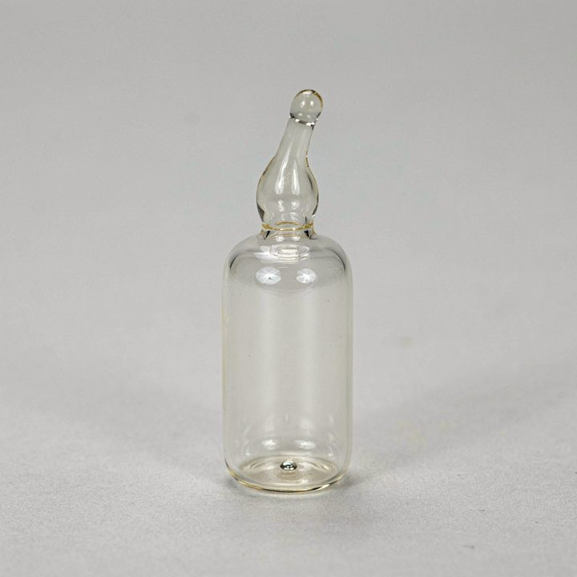<figcaption><div class="name">ig_test_00001_</div><div class="tags"><span class="tag">Ideogram 4</span></div><dl><dt>seed</dt><dd>1746908443593157</dd><dt>steps</dt><dd>20</dd><dt>cfg</dt><dd>7.0</dd><dt>sampler</dt><dd>euler</dd><dt>scheduler</dt><dd>Ideogram4 mu=0.0 std=1.75</dd><dt>size</dt><dd>1024x1024</dd><dt>full</dt><dd>1024x1024 · 1201 KB</dd></dl><details><summary>prompt</summary><pre>Use case: photorealistic-product
Asset type: close-up laboratory hardware photograph
Primary request: A square photorealistic close-up of a sealed glass ampoule used as a rubidium vapour cell.
Scene/backdrop: Light dove-gray seamless studio sweep.
Subject: One small flame-sealed borosilicate glass capsule standing upright, a squat cylinder about 25 mm across and 25 mm tall, closed by a smoothly domed glass cap, with a short narrow glass tip-off stem drawn to a rounded fused point rising at an angle from the shoulder. A single tiny bright bead of liquid metal rests inside at the bottom.
Composition/framing: Square frame, three-quarter view from slightly above, the capsule centred and filling about 55 percent of the frame.
Lighting/mood: Soft broad key from the upper left, gentle rim light along the glass edges, soft contact shadow.
Materials/textures: Clear thin-walled laboratory glass with true refraction and caustics, faint green edge tint.</pre></details></figcaption></figure>
<figure data-group="krea2-turbo">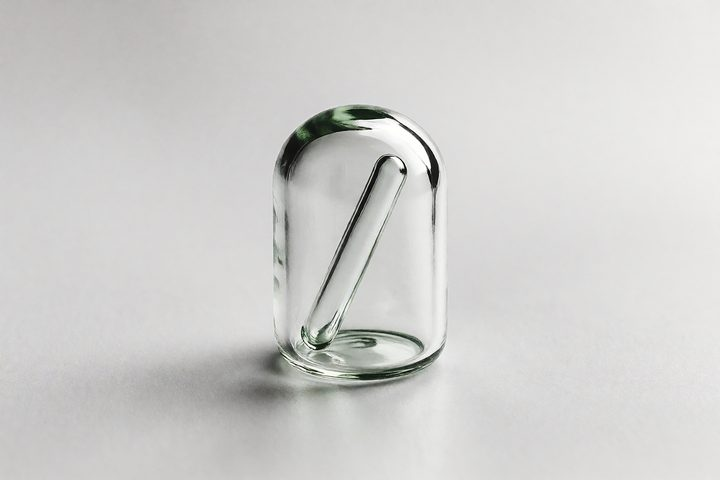<figcaption><div class="name">v7_hero_cell_2_00001_</div><div class="tags"><span class="tag">krea2 turbo</span></div><dl><dt>seed</dt><dd>1975696344</dd><dt>steps</dt><dd>8</dd><dt>cfg</dt><dd>1.0</dd><dt>sampler</dt><dd>euler</dd><dt>scheduler</dt><dd>simple</dd><dt>size</dt><dd>1536x1024</dd><dt>lora</dt><dd>krea2_darkbrush.safetensors @ 0.8</dd><dt>full</dt><dd>1536x1024 · 1581 KB</dd></dl><p class="note">Rejected: same fault, an internal rod instead of an external stem.</p><details><summary>prompt</summary><pre>Use case: stylized-concept
Asset type: hero artwork for a research portfolio on optically pumped magnetometry
Primary request: A wide 1536x1024 photorealistic macro studio photograph of a hermetically sealed rubidium vapour cell, a solid closed capsule of laboratory glass.
Scene/backdrop: Light dove-gray seamless studio sweep.
Subject: One small flame-sealed borosilicate glass capsule standing upright, a squat cylinder about 25 mm across and 25 mm tall. Its top is closed by a smoothly domed glass cap, the way the fused end of a sealed ampoule is domed, so the capsule is one continuous unbroken volume of glass from the flat base to the dome. A short narrow glass tip-off stem about 6 mm long, drawn to a rounded fused solid point, rises at an angle from the shoulder where the dome meets the wall. The wall is thin and continuous. Inside the sealed volume a single tiny bright bead of liquid metal rests in the bottom corner, and a faint fusion seam marks the tip-off.
Composition/framing: Wide landscape 3:2; the capsule centred, occupying about 45 percent of the frame, seen slightly from above at a three-quarter angle, generous empty space either side.
Lighting/mood: Minimalist premium studio art direction; soft broad key from the upper left, gentle rim light picking out the glass edges and the stem, soft contact shadow.
Materials/textures: Clear thin-walled laboratory glass with true refraction and caustics, faint green edge tint at the thickest glass, one small mercury-like droplet.</pre></details></figcaption></figure>
<figure data-group="krea2-turbo">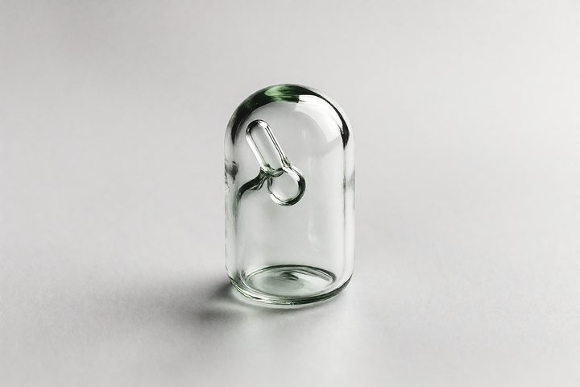<figcaption><div class="name">v7_hero_cell_1_00001_</div><div class="tags"><span class="tag">krea2 turbo</span></div><dl><dt>seed</dt><dd>1440231879</dd><dt>steps</dt><dd>8</dd><dt>cfg</dt><dd>1.0</dd><dt>sampler</dt><dd>euler</dd><dt>scheduler</dt><dd>simple</dd><dt>size</dt><dd>1536x1024</dd><dt>lora</dt><dd>krea2_darkbrush.safetensors @ 0.8</dd><dt>full</dt><dd>1536x1024 · 1570 KB</dd></dl><p class="note">Rejected: wide format put the tip-off stem inside the glass.</p><details><summary>prompt</summary><pre>Use case: stylized-concept
Asset type: hero artwork for a research portfolio on optically pumped magnetometry
Primary request: A wide 1536x1024 photorealistic macro studio photograph of a hermetically sealed rubidium vapour cell, a solid closed capsule of laboratory glass.
Scene/backdrop: Light dove-gray seamless studio sweep.
Subject: One small flame-sealed borosilicate glass capsule standing upright, a squat cylinder about 25 mm across and 25 mm tall. Its top is closed by a smoothly domed glass cap, the way the fused end of a sealed ampoule is domed, so the capsule is one continuous unbroken volume of glass from the flat base to the dome. A short narrow glass tip-off stem about 6 mm long, drawn to a rounded fused solid point, rises at an angle from the shoulder where the dome meets the wall. The wall is thin and continuous. Inside the sealed volume a single tiny bright bead of liquid metal rests in the bottom corner, and a faint fusion seam marks the tip-off.
Composition/framing: Wide landscape 3:2; the capsule centred, occupying about 45 percent of the frame, seen slightly from above at a three-quarter angle, generous empty space either side.
Lighting/mood: Minimalist premium studio art direction; soft broad key from the upper left, gentle rim light picking out the glass edges and the stem, soft contact shadow.
Materials/textures: Clear thin-walled laboratory glass with true refraction and caustics, faint green edge tint at the thickest glass, one small mercury-like droplet.</pre></details></figcaption></figure>
<figure data-group="krea2-turbo">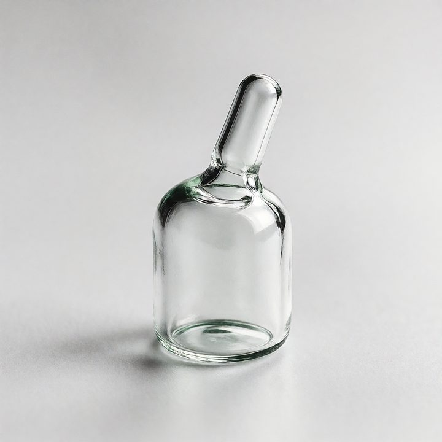<figcaption><div class="name">v6_s2_cell_3_00001_</div><div class="tags"><span class="tag">krea2 turbo</span></div><dl><dt>seed</dt><dd>96677971</dd><dt>steps</dt><dd>8</dd><dt>cfg</dt><dd>1.0</dd><dt>sampler</dt><dd>euler</dd><dt>scheduler</dt><dd>simple</dd><dt>size</dt><dd>1024x1024</dd><dt>lora</dt><dd>krea2_darkbrush.safetensors @ 0.8</dd><dt>full</dt><dd>1024x1024 · 1076 KB</dd></dl><details><summary>prompt</summary><pre>Use case: photorealistic-product
Asset type: close-up laboratory hardware photograph for a research portfolio
Primary request: A square 1024x1024 photorealistic macro studio photograph of a sealed glass ampoule used as a rubidium vapour cell, a solid closed capsule of laboratory glass.
Scene/backdrop: Light dove-gray seamless studio sweep.
Subject: One small hermetically sealed borosilicate glass ampoule standing upright, a squat capsule about 25 mm across and 25 mm tall. Its top is closed by a smoothly domed glass cap, the way the fused end of a flame-sealed ampoule is domed, so the capsule is one continuous unbroken volume of glass from the flat base to the dome. A short narrow glass tip-off stem about 6 mm long, drawn to a rounded fused point, rises at an angle from the shoulder where the dome meets the wall. The wall is thin and continuous. Inside the sealed volume a single tiny bright bead of liquid metal rests in the bottom corner, and a faint fusion seam marks the tip-off.
Composition/framing: Square frame, three-quarter view from slightly above; the ampoule centred, occupying about 55 percent of the frame.
Lighting/mood: Minimalist premium studio art direction; soft broad key from the upper left, gentle rim light along the glass edges and the stem, soft contact shadow.
Materials/textures: Clear thin-walled laboratory glass with true refraction and caustics, faint green edge tint at the thickest glass, one small mercury-like droplet.</pre></details></figcaption></figure>
<figure data-group="krea2-turbo">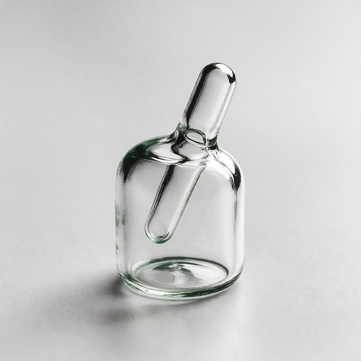<figcaption><div class="name">v6_s2_cell_2_00001_</div><div class="tags"><span class="tag">krea2 turbo</span></div><dl><dt>seed</dt><dd>1296459969</dd><dt>steps</dt><dd>8</dd><dt>cfg</dt><dd>1.0</dd><dt>sampler</dt><dd>euler</dd><dt>scheduler</dt><dd>simple</dd><dt>size</dt><dd>1024x1024</dd><dt>lora</dt><dd>krea2_darkbrush.safetensors @ 0.8</dd><dt>full</dt><dd>1024x1024 · 1112 KB</dd></dl><p class="note">Rejected: the stem sits inside the capsule.</p><details><summary>prompt</summary><pre>Use case: photorealistic-product
Asset type: close-up laboratory hardware photograph for a research portfolio
Primary request: A square 1024x1024 photorealistic macro studio photograph of a sealed glass ampoule used as a rubidium vapour cell, a solid closed capsule of laboratory glass.
Scene/backdrop: Light dove-gray seamless studio sweep.
Subject: One small hermetically sealed borosilicate glass ampoule standing upright, a squat capsule about 25 mm across and 25 mm tall. Its top is closed by a smoothly domed glass cap, the way the fused end of a flame-sealed ampoule is domed, so the capsule is one continuous unbroken volume of glass from the flat base to the dome. A short narrow glass tip-off stem about 6 mm long, drawn to a rounded fused point, rises at an angle from the shoulder where the dome meets the wall. The wall is thin and continuous. Inside the sealed volume a single tiny bright bead of liquid metal rests in the bottom corner, and a faint fusion seam marks the tip-off.
Composition/framing: Square frame, three-quarter view from slightly above; the ampoule centred, occupying about 55 percent of the frame.
Lighting/mood: Minimalist premium studio art direction; soft broad key from the upper left, gentle rim light along the glass edges and the stem, soft contact shadow.
Materials/textures: Clear thin-walled laboratory glass with true refraction and caustics, faint green edge tint at the thickest glass, one small mercury-like droplet.</pre></details></figcaption></figure>
<figure data-group="krea2-turbo">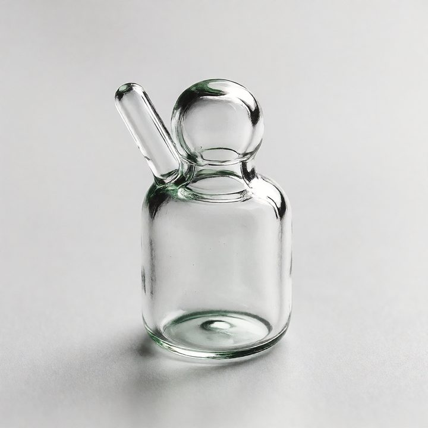<figcaption><div class="name">v6_s2_cell_1_00001_</div><div class="tags"><span class="tag">krea2 turbo</span></div><dl><dt>seed</dt><dd>308488285</dd><dt>steps</dt><dd>8</dd><dt>cfg</dt><dd>1.0</dd><dt>sampler</dt><dd>euler</dd><dt>scheduler</dt><dd>simple</dd><dt>size</dt><dd>1024x1024</dd><dt>lora</dt><dd>krea2_darkbrush.safetensors @ 0.8</dd><dt>full</dt><dd>1024x1024 · 1105 KB</dd></dl><p class="note">Rejected: sealed at last, but the dome became a bulb.</p><details><summary>prompt</summary><pre>Use case: photorealistic-product
Asset type: close-up laboratory hardware photograph for a research portfolio
Primary request: A square 1024x1024 photorealistic macro studio photograph of a sealed glass ampoule used as a rubidium vapour cell, a solid closed capsule of laboratory glass.
Scene/backdrop: Light dove-gray seamless studio sweep.
Subject: One small hermetically sealed borosilicate glass ampoule standing upright, a squat capsule about 25 mm across and 25 mm tall. Its top is closed by a smoothly domed glass cap, the way the fused end of a flame-sealed ampoule is domed, so the capsule is one continuous unbroken volume of glass from the flat base to the dome. A short narrow glass tip-off stem about 6 mm long, drawn to a rounded fused point, rises at an angle from the shoulder where the dome meets the wall. The wall is thin and continuous. Inside the sealed volume a single tiny bright bead of liquid metal rests in the bottom corner, and a faint fusion seam marks the tip-off.
Composition/framing: Square frame, three-quarter view from slightly above; the ampoule centred, occupying about 55 percent of the frame.
Lighting/mood: Minimalist premium studio art direction; soft broad key from the upper left, gentle rim light along the glass edges and the stem, soft contact shadow.
Materials/textures: Clear thin-walled laboratory glass with true refraction and caustics, faint green edge tint at the thickest glass, one small mercury-like droplet.</pre></details></figcaption></figure>
<figure data-group="krea2-turbo">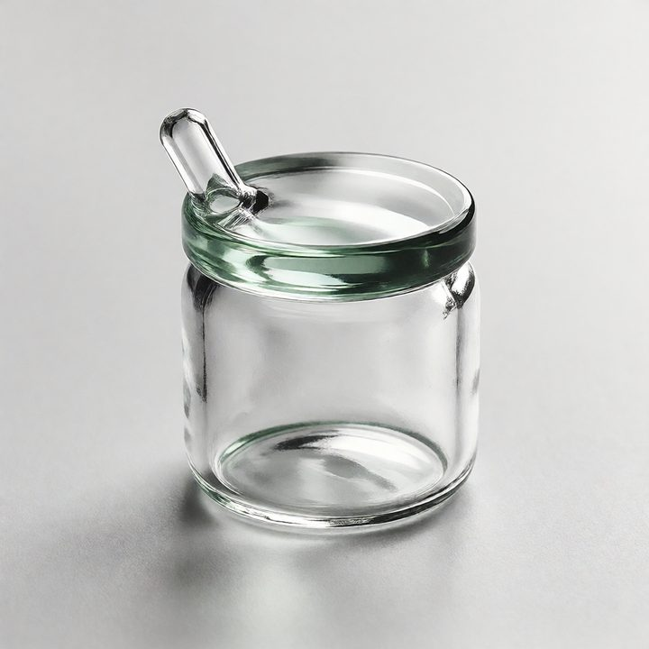<figcaption><div class="name">v5_s2_cell_00001_</div><div class="tags"><span class="tag">krea2 turbo</span></div><dl><dt>seed</dt><dd>557717268</dd><dt>steps</dt><dd>8</dd><dt>cfg</dt><dd>1.0</dd><dt>sampler</dt><dd>euler</dd><dt>scheduler</dt><dd>simple</dd><dt>size</dt><dd>1024x1024</dd><dt>lora</dt><dd>krea2_darkbrush.safetensors @ 0.8</dd><dt>full</dt><dd>1024x1024 · 1160 KB</dd></dl><p class="note">Rejected: an open jar with a good tip-off stem. First attempt with every negation deleted.</p><details><summary>prompt</summary><pre>Use case: photorealistic-product
Asset type: close-up laboratory hardware photograph for a research portfolio
Primary request: A square 1024x1024 photorealistic macro studio photograph of a sealed rubidium vapour cell, a solid closed capsule of laboratory glass.
Scene/backdrop: Light dove-gray seamless studio sweep.
Subject: One small sealed borosilicate glass capsule standing upright, a squat cylinder about 25 mm across and 25 mm tall. Its flat circular top is a polished optical window fused across the full diameter, a smooth transparent disc like a lens element, and it rests on an identical flat window at the bottom. The glass wall is thin and continuous, curving smoothly into both windows so the capsule is one closed volume. A short narrow glass tip-off stem, about 6 mm long with a rounded fused tip, rises at an angle from the shoulder near the top edge. Inside the sealed volume a single tiny bright bead of liquid metal rests in the bottom corner, and a faint seam marks where the stem was fused shut.
Composition/framing: Square frame, three-quarter view from slightly above so the top window reads as a flat disc and the curved wall is visible beneath it; the capsule centred, occupying about 55 percent of the frame.
Lighting/mood: Minimalist premium studio art direction; soft broad key from the upper left, a gentle rim light picking out the glass edges and the stem, one clean specular streak across the top window, soft contact shadow.
Materials/textures: Clear thin-walled laboratory glass with true refraction and caustics, faint green edge tint at the thickest glass, one small mercury-like droplet.</pre></details></figcaption></figure>
<figure data-group="krea2-turbo">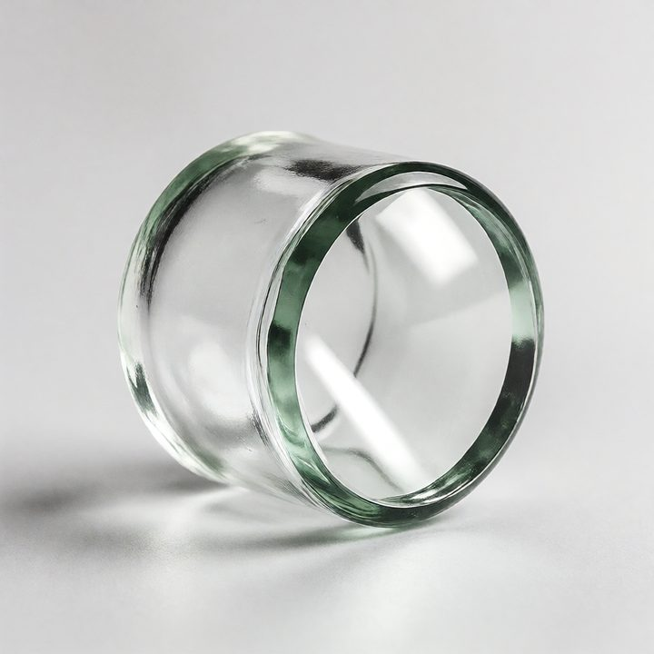<figcaption><div class="name">v4_s2_cell_00001_</div><div class="tags"><span class="tag">krea2 turbo</span></div><dl><dt>seed</dt><dd>1847051315</dd><dt>steps</dt><dd>8</dd><dt>cfg</dt><dd>1.0</dd><dt>sampler</dt><dd>euler</dd><dt>scheduler</dt><dd>simple</dd><dt>size</dt><dd>1024x1024</dd><dt>lora</dt><dd>krea2_darkbrush.safetensors @ 0.8</dd><dt>full</dt><dd>1024x1024 · 1155 KB</dd></dl><p class="note">Rejected: an open glass tumbler. Piling on more negations made it worse.</p><details><summary>prompt</summary><pre>Use case: photorealistic-product
Asset type: close-up laboratory hardware photograph for a research portfolio
Primary request: A square 1024x1024 photorealistic close-up of a hermetically sealed alkali vapour cell, a solid closed laboratory glass component with no opening anywhere.
Scene/backdrop: Light dove-gray seamless studio sweep, nothing else in frame.
Subject: ONE squat borosilicate glass cylinder, about 25 mm across and 20 mm long, resting on its side. Both circular ends are permanently CLOSED by flat optically polished glass windows fused flush to the body, each window a smooth transparent disc exactly like a camera lens element, catching one clean elongated specular highlight. The body is a completely sealed capsule: the glass surface is continuous and unbroken all the way around, with no opening, no mouth, no rim, no hollow interior visible. One short sealed glass stub about 6 mm long with a rounded fire-polished tip projects sideways from the curved wall. A single tiny bead of silvery metal rests inside against the lower glass.
Composition/framing: Square frame, three-quarter view from slightly above, the cylinder axis running from lower left to upper right so one flat sealed end window faces the camera at a shallow angle; the cell fills about 55 percent of the frame, centred.
Lighting/mood: Soft large-source studio light from the upper left, one crisp specular streak across the sealed end window, gentle contact shadow beneath.
Materials/textures: Thick clear borosilicate glass with visible wall thickness at the edge, faint green edge tint, flawless polished sealed window faces.
Constraints: The cell is SEALED and CLOSED. NO open end, NO rim, NO lip, NO mouth, NO hole, NO opening of any kind, NO hollow cup, NO tube open at one end. It is NOT a bottle, NOT a jar, NOT a vial, NOT a flask, NOT a cup, NOT a drinking glass, NOT a candle holder. No neck, no thread, no cap, no lid, no cork, no label, no liquid, no text, no numbers, no watermark, no hands.</pre></details><details><summary>negative</summary><pre>open end, rim, lip, mouth, opening, hollow cup, jar, bottle, vial, glass tumbler, text, letters, numbers, watermark, logo, blurry, low quality, deformed, extra objects</pre></details></figcaption></figure>
<figure data-group="krea2-turbo">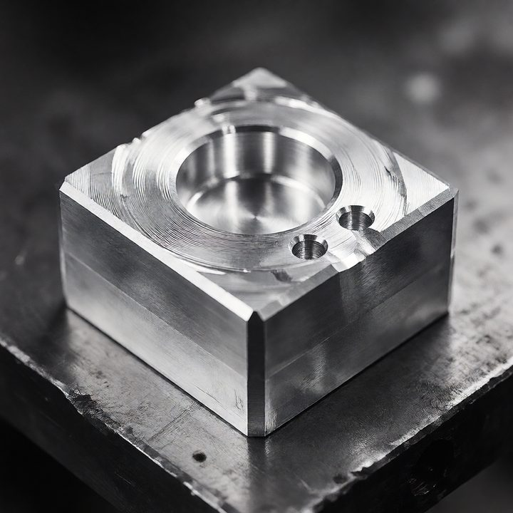<figcaption><div class="name">v3_s3_machining_00001_</div><div class="tags"><span class="tag">krea2 turbo</span></div><dl><dt>seed</dt><dd>789506173</dd><dt>steps</dt><dd>8</dd><dt>cfg</dt><dd>1.0</dd><dt>sampler</dt><dd>euler</dd><dt>scheduler</dt><dd>simple</dd><dt>size</dt><dd>1024x1024</dd><dt>lora</dt><dd>krea2_darkbrush.safetensors @ 0.8</dd><dt>full</dt><dd>1024x1024 · 1466 KB</dd></dl><details><summary>prompt</summary><pre>Use case: photorealistic-product
Asset type: close-up manufacturing photograph for a research portfolio
Primary request: A square 1024x1024 photorealistic close-up of a finished precision-machined aluminium part sitting still on a workbench, already cut, with no tool touching it.
Scene/backdrop: A dark matte steel bench top, clean and swept, softly out of focus behind the part.
Subject: ONE rectangular block of aluminium, its top face freshly face-milled to a smooth continuous surface covered in fine regular overlapping arcs of tool witness marks. A shallow circular pocket with a clean vertical wall and a flat bottom is milled into the top face, and two small precisely drilled holes with crisp unbroken edges sit beside it. All outer edges are sharp, straight and lightly chamfered.
Composition/framing: Square frame, three-quarter view from about 40 degrees above so the milled top face and one side wall are both visible; the block fills about 65% of the frame.
Lighting/mood: Raking light from the upper left so the concentric tool marks catch the light as fine parallel highlights; controlled specular sheen, soft shadow.
Materials/textures: Bare satin aluminium with a fine directional machined finish, sharp chamfers, no coating, no paint.
Constraints: The part is finished and untouched. NO cutting tool, NO end mill, NO drill bit, NO spindle, NO chips or swarf, NO coolant, NO torn or fractured or broken material, NO jagged edges, NO cracks, NO rough cast surface. No text, no numbers, no watermark, no hands.</pre></details><details><summary>negative</summary><pre>text, letters, numbers, digits, watermark, signature, logo, blurry, low quality, deformed, distorted, extra objects, cluttered</pre></details></figcaption></figure>
<figure data-group="krea2-turbo installed"><figcaption><div class="name">v3_w_metrology_00001_</div><div class="tags"><span class="tag">krea2 turbo</span><span class="tag live">metrology.png</span></div><dl><dt>seed</dt><dd>531248676</dd><dt>steps</dt><dd>8</dd><dt>cfg</dt><dd>1.0</dd><dt>sampler</dt><dd>euler</dd><dt>scheduler</dt><dd>simple</dd><dt>size</dt><dd>1536x1024</dd><dt>lora</dt><dd>krea2_darkbrush.safetensors @ 0.8</dd><dt>full</dt><dd>1536x1024 · 1810 KB</dd></dl><details><summary>prompt</summary><pre>Use case: photorealistic-natural
Asset type: editorial laboratory photograph for a research portfolio
Primary request: A wide 1536x1024 photorealistic photograph of dimensional metrology reference standards resting on a granite inspection surface.
Scene/backdrop: A black granite surface plate, its lapped top face flat and slightly matte, filling the lower two thirds of the frame; a dark neutral studio background above it, fading out of focus.
Subject: A short stack of four rectangular steel gauge blocks wrung together into one solid column, their lapped faces mirror-bright; beside them two loose blocks lie flat, and a single precision steel cylinder rests on its side. Every surface is bare polished steel. There is no measuring instrument in the frame.
Composition/framing: Wide landscape frame, low camera close to the plate surface, objects grouped left of centre with open granite to the right; shallow depth of field, the near stack sharp and the background soft.
Lighting/mood: Single soft raking light from the left grazing across the granite so the lapped steel faces read as mirrors against the matte stone; deep quiet shadows.
Materials/textures: Mirror-polished hardened steel, fine-grained black granite, faint reflections of the steel in the plate.
Constraints: Absolutely NO dials, NO gauge faces, NO round instrument heads, NO clock-like objects, NO needles or pointers, NO calipers, NO micrometers, NO rulers, NO graduation marks, NO engraved scales. No text, no numbers, no lettering of any kind, no logos, no watermark, no hands, no people.</pre></details><details><summary>negative</summary><pre>text, letters, numbers, digits, watermark, signature, logo, blurry, low quality, deformed, distorted, extra objects, cluttered</pre></details></figcaption></figure>
<figure data-group="krea2-turbo">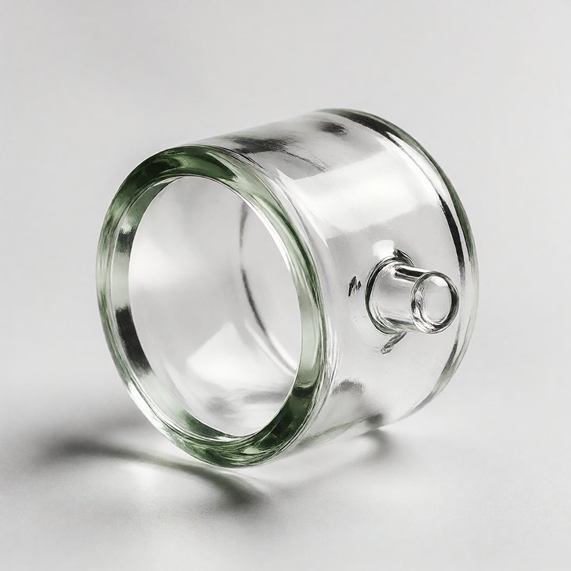<figcaption><div class="name">v3_s2_cell_00001_</div><div class="tags"><span class="tag">krea2 turbo</span></div><dl><dt>seed</dt><dd>1378036514</dd><dt>steps</dt><dd>8</dd><dt>cfg</dt><dd>1.0</dd><dt>sampler</dt><dd>euler</dd><dt>scheduler</dt><dd>simple</dd><dt>size</dt><dd>1024x1024</dd><dt>lora</dt><dd>krea2_darkbrush.safetensors @ 0.8</dd><dt>full</dt><dd>1024x1024 · 1196 KB</dd></dl><details><summary>prompt</summary><pre>Use case: photorealistic-product
Asset type: close-up laboratory hardware photograph for a research portfolio
Primary request: A square 1024x1024 photorealistic close-up of a sealed alkali vapour cell, a laboratory glass component, photographed as a product still.
Scene/backdrop: Light dove-gray seamless studio sweep, no bench, no other equipment.
Subject: ONE squat borosilicate glass cylinder, distinctly wider than it is tall, roughly 25 mm across and 20 mm long, lying on its side with its axis horizontal. Both circular ends are closed by flat optically polished parallel windows that catch a clean specular highlight. One short sealed glass stub, about 6 mm long with a rounded fire-polished tip, projects from the curved side wall. Inside, a single tiny bead of silvery metal rests against the lower glass.
Composition/framing: Square frame, three-quarter view from slightly above so both the flat end window and the curved side wall are visible at once; the cell fills about 55% of the frame and is centred.
Lighting/mood: Soft large-source studio light from the upper left, one crisp specular streak along the polished window, gentle contact shadow.
Materials/textures: Thick clear borosilicate glass with visible wall thickness at the rim, faint green edge tint, flawless polished window faces.
Constraints: It is NOT a bottle, NOT a jar, NOT a vial, NOT a flask, NOT a drinking glass. No neck, no threaded opening, no cap, no lid, no cork, no label, no liquid, no pouring shape. No text, no numbers, no watermark, no hands.</pre></details><details><summary>negative</summary><pre>text, letters, numbers, digits, watermark, signature, logo, blurry, low quality, deformed, distorted, extra objects, cluttered</pre></details></figcaption></figure>
<figure data-group="krea2-turbo">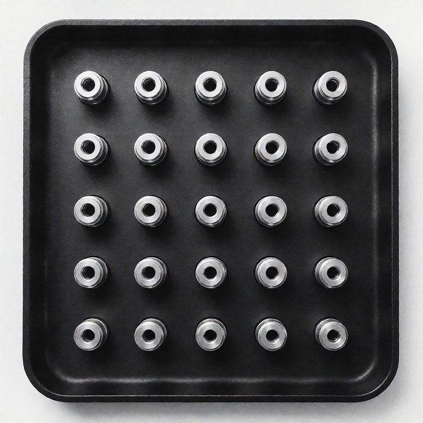<figcaption><div class="name">v2_s5_inspection_00001_</div><div class="tags"><span class="tag">krea2 turbo</span></div><dl><dt>seed</dt><dd>1359601664</dd><dt>steps</dt><dd>8</dd><dt>cfg</dt><dd>1.0</dd><dt>sampler</dt><dd>euler</dd><dt>scheduler</dt><dd>simple</dd><dt>size</dt><dd>1024x1024</dd><dt>lora</dt><dd>krea2_darkbrush.safetensors @ 0.8</dd><dt>full</dt><dd>1024x1024 · 1452 KB</dd></dl><details><summary>prompt</summary><pre>Use case: photorealistic-natural
Asset type: small square symbol image for a service row
Primary request: A Square 1024x1024 black-and-white fine-grain editorial photograph, crisp contrast, deep blacks, fine monochrome film grain, seen from directly above, of parts laid out for inspection.
Scene/backdrop: A matte dark inspection tray filling the frame.
Subject: Twenty-five identical small machined aluminium parts arranged in a precise five by five grid, each in its own shallow recess, all facing the same way, evenly spaced.
Composition/framing: Square, straight top-down view, the grid square to the frame and filling about 80 percent of it.
Lighting/mood: Flat even overhead light so every part reads the same; short soft shadows.
Materials/textures: Bead-blasted aluminium parts, matte dark tray.
Constraints: No humans, no hands, no tools, no text, no labels, no watermark.</pre></details></figcaption></figure>
<figure data-group="krea2-turbo"><figcaption><div class="name">v2_s4_detectors_00001_</div><div class="tags"><span class="tag">krea2 turbo</span></div><dl><dt>seed</dt><dd>774088898</dd><dt>steps</dt><dd>8</dd><dt>cfg</dt><dd>1.0</dd><dt>sampler</dt><dd>euler</dd><dt>scheduler</dt><dd>simple</dd><dt>size</dt><dd>1024x1024</dd><dt>lora</dt><dd>krea2_darkbrush.safetensors @ 0.8</dd><dt>full</dt><dd>1024x1024 · 1301 KB</dd></dl><details><summary>prompt</summary><pre>Use case: photorealistic-natural
Asset type: small square symbol image for a service row
Primary request: A Square 1024x1024 black-and-white fine-grain editorial photograph, crisp contrast, deep blacks, fine monochrome film grain, macro, of a matched pair of photodiode detectors.
Scene/backdrop: Plain very light grey background, nothing else in frame.
Subject: Two identical small cylindrical metal-can photodiodes on short posts, standing side by side at the same height, each with a round flat glass window at the front and a small square active area visible behind the glass.
Composition/framing: Square, the pair centred and symmetrical, facing camera, filling about 60 percent of the frame.
Lighting/mood: Soft even light; a matching highlight on each window.
Materials/textures: Nickel-plated metal cans, clear glass windows, matte black posts.
Constraints: No cables, no connectors in frame, no text, no part numbers, no watermark.</pre></details></figcaption></figure>
<figure data-group="krea2-turbo"><figcaption><div class="name">v2_s3_machining_00001_</div><div class="tags"><span class="tag">krea2 turbo</span></div><dl><dt>seed</dt><dd>1464196650</dd><dt>steps</dt><dd>8</dd><dt>cfg</dt><dd>1.0</dd><dt>sampler</dt><dd>euler</dd><dt>scheduler</dt><dd>simple</dd><dt>size</dt><dd>1024x1024</dd><dt>lora</dt><dd>krea2_darkbrush.safetensors @ 0.8</dd><dt>full</dt><dd>1024x1024 · 1385 KB</dd></dl><p class="note">Rejected: the block shows a torn fracture face, not a milled one.</p><details><summary>prompt</summary><pre>Use case: photorealistic-natural
Asset type: small square symbol image for a service row
Primary request: A Square 1024x1024 black-and-white fine-grain editorial photograph, crisp contrast, deep blacks, fine monochrome film grain, macro, of milling in progress.
Scene/backdrop: Plain very light grey background above; the workpiece occupies the lower third.
Subject: A four-flute carbide end mill standing vertically, its helical flutes crisp, poised just above an aluminium block whose top face has been cut flat with a clean shallow slot, the slot floor showing regular fine cusps left by the cutter.
Composition/framing: Square, cutter centred and vertical, filling about 55 percent of the height.
Lighting/mood: Even light; a bright line along each flute edge.
Materials/textures: Dark carbide with a fine ground finish, freshly cut bright aluminium.
Constraints: No swarf, no chips, no coolant, no torn or broken material, no machine body, no text, no watermark.</pre></details></figcaption></figure>
<figure data-group="krea2-turbo"><figcaption><div class="name">v2_s2_cell_00001_</div><div class="tags"><span class="tag">krea2 turbo</span></div><dl><dt>seed</dt><dd>1238853181</dd><dt>steps</dt><dd>8</dd><dt>cfg</dt><dd>1.0</dd><dt>sampler</dt><dd>euler</dd><dt>scheduler</dt><dd>simple</dd><dt>size</dt><dd>1024x1024</dd><dt>lora</dt><dd>krea2_darkbrush.safetensors @ 0.8</dd><dt>full</dt><dd>1024x1024 · 1315 KB</dd></dl><p class="note">Rejected: still reads as a bottle. Four attempts failed this way before I found that cfg 1.0 discards the negative prompt and that &#x27;no bottle, no jar&#x27; in the positive only injects those words.</p><details><summary>prompt</summary><pre>Use case: photorealistic-natural
Asset type: small square symbol image for a service row
Primary request: A Square 1024x1024 black-and-white fine-grain editorial photograph, crisp contrast, deep blacks, fine monochrome film grain, macro, of a rubidium vapour cell.
Scene/backdrop: Plain very light grey background, nothing else in frame.
Subject: A single small sealed borosilicate glass cell: a squat cylinder with flat polished windows on both circular ends and a short narrow glass tip-off stem rising from the shoulder. Thin clear walls, empty interior, one tiny bright bead of liquid metal in the bottom.
Composition/framing: Square, the cell centred and upright, filling about 60 percent of the frame, seen at eye level.
Lighting/mood: Soft broad light; the glass edges and the stem catch a thin bright line.
Materials/textures: Thin laboratory glass, true refraction, no coatings.
Constraints: No jar, no bottle, no lid, no cork, no chrome collar, no mount, no liquid filling the cell, no text, no watermark.</pre></details></figcaption></figure>
<figure data-group="krea2-turbo"><figcaption><div class="name">v2_s1_optics_00001_</div><div class="tags"><span class="tag">krea2 turbo</span></div><dl><dt>seed</dt><dd>1990473205</dd><dt>steps</dt><dd>8</dd><dt>cfg</dt><dd>1.0</dd><dt>sampler</dt><dd>euler</dd><dt>scheduler</dt><dd>simple</dd><dt>size</dt><dd>1024x1024</dd><dt>lora</dt><dd>krea2_darkbrush.safetensors @ 0.8</dd><dt>full</dt><dd>1024x1024 · 1268 KB</dd></dl><details><summary>prompt</summary><pre>Use case: photorealistic-natural
Asset type: small square symbol image for a service row
Primary request: A Square 1024x1024 black-and-white fine-grain editorial photograph, crisp contrast, deep blacks, fine monochrome film grain, macro, of two optical prisms.
Scene/backdrop: Plain very light grey background, no surface texture, nothing else in frame.
Subject: One right-angle prism standing on its square end with the long hypotenuse face toward camera, and beside it a polarising beamsplitter cube of the same height with a faint diagonal seam visible through the glass where its two halves are cemented.
Composition/framing: Square, both pieces centred together, filling about 65 percent of the frame, eye level.
Lighting/mood: Soft even light with one narrow specular highlight along each polished edge.
Materials/textures: Clear optical glass with sharp ground bevels and honest refraction.
Constraints: No mounts, no holders, no text, no watermark, no rainbow colour fringing.</pre></details></figcaption></figure>
<figure data-group="krea2-turbo"><figcaption><div class="name">v2_w_metrology_00001_</div><div class="tags"><span class="tag">krea2 turbo</span></div><dl><dt>seed</dt><dd>1468021974</dd><dt>steps</dt><dd>8</dd><dt>cfg</dt><dd>1.0</dd><dt>sampler</dt><dd>euler</dd><dt>scheduler</dt><dd>simple</dd><dt>size</dt><dd>1536x1024</dd><dt>lora</dt><dd>krea2_darkbrush.safetensors @ 0.8</dd><dt>full</dt><dd>1536x1024 · 2190 KB</dd></dl><p class="note">Rejected: the dial carries garbled numbers despite the constraint. krea2 cannot write text, so the fix was to remove the dial rather than forbid the numbers.</p><details><summary>prompt</summary><pre>Use case: photorealistic-natural
Asset type: editorial image for a research portfolio
Primary request: A wide 1536x1024 black-and-white fine-grain editorial photograph, crisp contrast, deep blacks, fine monochrome film grain of a dimensional inspection set-up on a granite surface plate.
Scene/backdrop: A black granite surface plate, matte and slightly speckled, filling the lower frame; plain bright background above.
Subject: A stack of four rectangular hardened steel gauge blocks wrung together, their lapped faces mirror-bright; beside them a machined aluminium part waiting to be checked; a dial indicator on a steel height stand with its spherical contact point resting on the top gauge block. The indicator dial faces slightly away from camera so its face reads as a blank white disc.
Composition/framing: Wide landscape 3:2, camera low and close, the gauge stack and the contact point at the centre of interest.
Lighting/mood: Soft directional light; the lapped block faces catch a bright specular line.
Materials/textures: Matte granite, ground and lapped hardened steel, bead-blasted aluminium.
Constraints: No humans, no legible numbers, no dial graduations facing camera, no text, no brand names, no watermark.</pre></details></figcaption></figure>
<figure data-group="krea2-turbo installed"><figcaption><div class="name">v2_w_shield_00001_</div><div class="tags"><span class="tag">krea2 turbo</span><span class="tag live">shielded-chamber.png</span></div><dl><dt>seed</dt><dd>1867086054</dd><dt>steps</dt><dd>8</dd><dt>cfg</dt><dd>1.0</dd><dt>sampler</dt><dd>euler</dd><dt>scheduler</dt><dd>simple</dd><dt>size</dt><dd>1536x1024</dd><dt>lora</dt><dd>krea2_darkbrush.safetensors @ 0.8</dd><dt>full</dt><dd>1536x1024 · 2018 KB</dd></dl><details><summary>prompt</summary><pre>Use case: photorealistic-natural
Asset type: editorial background image for a research portfolio
Primary request: A wide 1536x1024 black-and-white fine-grain editorial photograph, crisp contrast, deep blacks, fine monochrome film grain looking into the open end of a cylindrical magnetic shield.
Scene/backdrop: A quiet laboratory, dark surroundings, the shield filling the frame.
Subject: Three nested concentric mu-metal cylinders of decreasing diameter seen end on, their rims stepping inward one behind the next, smooth matte grey metal walls with a fine satin finish, a soft pool of light at the innermost end.
Composition/framing: Wide landscape 3:2, camera on the cylinder axis so the rims form clean concentric circles, the bright innermost opening slightly off centre.
Lighting/mood: One soft light from deep inside; the outer rim falls into near-black.
Materials/textures: Matte annealed mu-metal, no reflections sharp enough to read the room.
Constraints: No humans, no cables, no text, no watermark, no visible equipment inside.</pre></details></figcaption></figure>
<figure data-group="krea2-turbo installed"><figcaption><div class="name">v2_w_sensor_housing_00001_</div><div class="tags"><span class="tag">krea2 turbo</span><span class="tag live">sensor-housing.png</span></div><dl><dt>seed</dt><dd>1560511686</dd><dt>steps</dt><dd>8</dd><dt>cfg</dt><dd>1.0</dd><dt>sampler</dt><dd>euler</dd><dt>scheduler</dt><dd>simple</dd><dt>size</dt><dd>1536x1024</dd><dt>lora</dt><dd>krea2_darkbrush.safetensors @ 0.8</dd><dt>full</dt><dd>1536x1024 · 2206 KB</dd></dl><details><summary>prompt</summary><pre>Use case: photorealistic-natural
Asset type: editorial image for a research portfolio
Primary request: A wide 1536x1024 black-and-white fine-grain editorial photograph, crisp contrast, deep blacks, fine monochrome film grain of a precision machined aluminium sensor housing.
Scene/backdrop: A clean matte steel workbench, plain and uncluttered, softly out of focus behind.
Subject: One rectangular aluminium housing about 136 mm long, lid removed, lying flat. Inside are milled pockets and a long straight channel running its length, with circular seats at intervals. Counterbored fixing holes along the rim, crisp sharp arrises, fine concentric tool marks on the pocket floors.
Composition/framing: Wide landscape 3:2, camera close and slightly above at a three-quarter angle so the internal channel is visible along its length.
Lighting/mood: Raking light from the left so the machined surfaces show their finish; deep shadow in the pockets.
Materials/textures: Bead-blasted and anodised aluminium, bright cut edges, faint machining witness marks.
Constraints: No humans, no hands, no tools, no text, no engraved markings, no watermark.</pre></details></figcaption></figure>
<figure data-group="krea2-turbo installed"><figcaption><div class="name">v2_w_optics_bench_00001_</div><div class="tags"><span class="tag">krea2 turbo</span><span class="tag live">optics-bench.png</span></div><dl><dt>seed</dt><dd>1222921344</dd><dt>steps</dt><dd>8</dd><dt>cfg</dt><dd>1.0</dd><dt>sampler</dt><dd>euler</dd><dt>scheduler</dt><dd>simple</dd><dt>size</dt><dd>1536x1024</dd><dt>lora</dt><dd>krea2_darkbrush.safetensors @ 0.8</dd><dt>full</dt><dd>1536x1024 · 2190 KB</dd></dl><details><summary>prompt</summary><pre>Use case: photorealistic-natural
Asset type: editorial image for a research portfolio on optically pumped magnetometry
Primary request: A wide 1536x1024 black-and-white fine-grain editorial photograph, crisp contrast, deep blacks, fine monochrome film grain of a laser optics bench, looking straight down its length.
Scene/backdrop: A black anodised aluminium optical breadboard filling the lower half, its regular grid of tapped mounting holes running away from camera to a bright empty far wall.
Subject: Two parallel rows of identical kinematic mirror mounts on short posts, each a small square anodised plate with three adjustment screws and a round mirror held at forty-five degrees; the rows recede and converge.
Composition/framing: Wide landscape 3:2, camera at bench height on the centre line, strong one-point perspective, the far end bright and empty.
Lighting/mood: Even diffuse laboratory light, deep shadow under the mounts, no flare.
Materials/textures: Matte black anodised aluminium, knurled steel adjusters, first-surface mirrors.
Constraints: No humans, no visible laser beam, no text, no watermark, no cables across the frame.</pre></details></figcaption></figure>
<figure data-group="krea2-turbo installed"><figcaption><div class="name">v2_w_vapor_cell_00001_</div><div class="tags"><span class="tag">krea2 turbo</span><span class="tag live">vapor-cell.png</span></div><dl><dt>seed</dt><dd>533753314</dd><dt>steps</dt><dd>8</dd><dt>cfg</dt><dd>1.0</dd><dt>sampler</dt><dd>euler</dd><dt>scheduler</dt><dd>simple</dd><dt>size</dt><dd>1536x1024</dd><dt>lora</dt><dd>krea2_darkbrush.safetensors @ 0.8</dd><dt>full</dt><dd>1536x1024 · 1643 KB</dd></dl><details><summary>prompt</summary><pre>Use case: stylized-concept
Asset type: hero artwork for a research portfolio on optically pumped magnetometry
Primary request: A wide 1536x1024 photorealistic macro studio photograph of a rubidium vapour cell.
Scene/backdrop: Light dove-gray seamless studio sweep, nothing else in frame.
Subject: A single small sealed borosilicate glass cell, a squat cylinder about 25 mm across and 25 mm tall with flat polished optical windows on its two circular ends and a short narrow glass stem, the tip-off, standing up from the shoulder. The glass is clear and empty-looking; one tiny bright bead of liquid metal rests in the bottom corner. Thin wall, visible seam where the stem was fused.
Composition/framing: Wide landscape 3:2; the cell centred, occupying about 45 percent of the frame, seen slightly from above at a three-quarter angle.
Lighting/mood: Minimalist premium studio art direction; soft broad key from upper left, gentle rim light picking out the glass edges and the stem.
Materials/textures: Clear thin-walled laboratory glass with true refraction and caustics, one small mercury-like droplet, no coatings, no metal fittings.
Constraints: No chrome clamps, no holder, no mount, no cables, no text, no watermark, no extra objects.</pre></details></figcaption></figure>
<figure data-group="krea2-turbo"><figcaption><div class="name">opm_svc5_00001_</div><div class="tags"><span class="tag">krea2 turbo</span></div><dl><dt>seed</dt><dd>271482714</dd><dt>steps</dt><dd>8</dd><dt>cfg</dt><dd>1.0</dd><dt>sampler</dt><dd>euler</dd><dt>scheduler</dt><dd>simple</dd><dt>size</dt><dd>1024x1024</dd><dt>lora</dt><dd>krea2_darkbrush.safetensors @ 0.8</dd><dt>full</dt><dd>1024x1024 · 1438 KB</dd></dl><details><summary>prompt</summary><pre>Square 1024x1024 black-and-white fine-grain macro photograph, editorial industrial style, crisp contrast, deep blacks, plain light background, subject centred and filling most of the frame, shallow depth of field. No humans, no text, no watermark, no branding. Subject: a row of identical small machined metal parts laid out in an even grid on a matte inspection tray, seen from directly above, strong repetition.</pre></details></figcaption></figure>
<figure data-group="krea2-turbo"><figcaption><div class="name">opm_svc4_00001_</div><div class="tags"><span class="tag">krea2 turbo</span></div><dl><dt>seed</dt><dd>136916598</dd><dt>steps</dt><dd>8</dd><dt>cfg</dt><dd>1.0</dd><dt>sampler</dt><dd>euler</dd><dt>scheduler</dt><dd>simple</dd><dt>size</dt><dd>1024x1024</dd><dt>lora</dt><dd>krea2_darkbrush.safetensors @ 0.8</dd><dt>full</dt><dd>1024x1024 · 1291 KB</dd></dl><details><summary>prompt</summary><pre>Square 1024x1024 black-and-white fine-grain macro photograph, editorial industrial style, crisp contrast, deep blacks, plain light background, subject centred and filling most of the frame, shallow depth of field. No humans, no text, no watermark, no branding. Subject: a matched pair of small photodiode detector heads side by side on short posts, identical cylindrical bodies, tiny active windows facing the camera.</pre></details></figcaption></figure>
<figure data-group="krea2-turbo"><figcaption><div class="name">opm_svc3_00001_</div><div class="tags"><span class="tag">krea2 turbo</span></div><dl><dt>seed</dt><dd>1563321590</dd><dt>steps</dt><dd>8</dd><dt>cfg</dt><dd>1.0</dd><dt>sampler</dt><dd>euler</dd><dt>scheduler</dt><dd>simple</dd><dt>size</dt><dd>1024x1024</dd><dt>lora</dt><dd>krea2_darkbrush.safetensors @ 0.8</dd><dt>full</dt><dd>1024x1024 · 1378 KB</dd></dl><details><summary>prompt</summary><pre>Square 1024x1024 black-and-white fine-grain macro photograph, editorial industrial style, crisp contrast, deep blacks, plain light background, subject centred and filling most of the frame, shallow depth of field. No humans, no text, no watermark, no branding. Subject: a carbide end mill standing upright above a freshly milled aluminium block, fine helical flutes on the cutter, crisp machined surface below.</pre></details></figcaption></figure>
<figure data-group="krea2-turbo">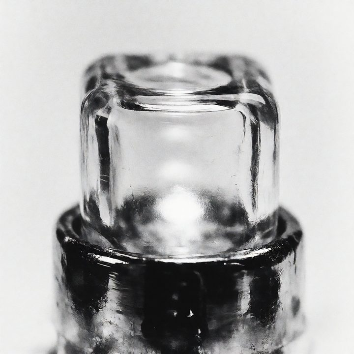<figcaption><div class="name">opm_svc2_00001_</div><div class="tags"><span class="tag">krea2 turbo</span></div><dl><dt>seed</dt><dd>1855336274</dd><dt>steps</dt><dd>8</dd><dt>cfg</dt><dd>1.0</dd><dt>sampler</dt><dd>euler</dd><dt>scheduler</dt><dd>simple</dd><dt>size</dt><dd>1024x1024</dd><dt>lora</dt><dd>krea2_darkbrush.safetensors @ 0.8</dd><dt>full</dt><dd>1024x1024 · 1480 KB</dd></dl><details><summary>prompt</summary><pre>Square 1024x1024 black-and-white fine-grain macro photograph, editorial industrial style, crisp contrast, deep blacks, plain light background, subject centred and filling most of the frame, shallow depth of field. No humans, no text, no watermark, no branding. Subject: a small sealed cuboid glass vapour cell held in a chrome collar, faint soft glow contained inside the glass, clean optical surfaces.</pre></details></figcaption></figure>
<figure data-group="krea2-turbo">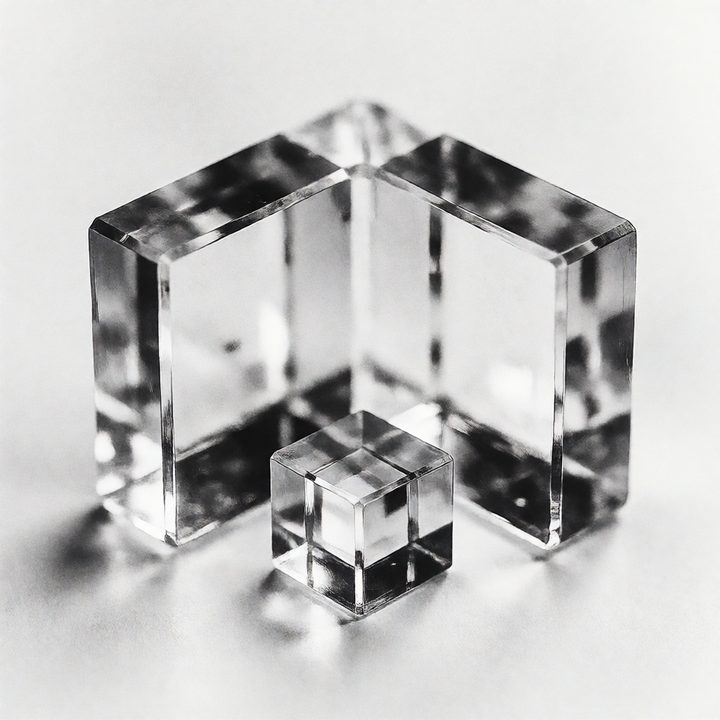<figcaption><div class="name">opm_svc1_00001_</div><div class="tags"><span class="tag">krea2 turbo</span></div><dl><dt>seed</dt><dd>1975393505</dd><dt>steps</dt><dd>8</dd><dt>cfg</dt><dd>1.0</dd><dt>sampler</dt><dd>euler</dd><dt>scheduler</dt><dd>simple</dd><dt>size</dt><dd>1024x1024</dd><dt>lora</dt><dd>krea2_darkbrush.safetensors @ 0.8</dd><dt>full</dt><dd>1024x1024 · 1404 KB</dd></dl><details><summary>prompt</summary><pre>Square 1024x1024 black-and-white fine-grain macro photograph, editorial industrial style, crisp contrast, deep blacks, plain light background, subject centred and filling most of the frame, shallow depth of field. No humans, no text, no watermark, no branding. Subject: a pair of right-angle glass prisms and a small polarising beam-splitter cube resting together, edges catching the light, clear optical glass with sharp bevels.</pre></details></figcaption></figure>
<figure data-group="krea2-turbo">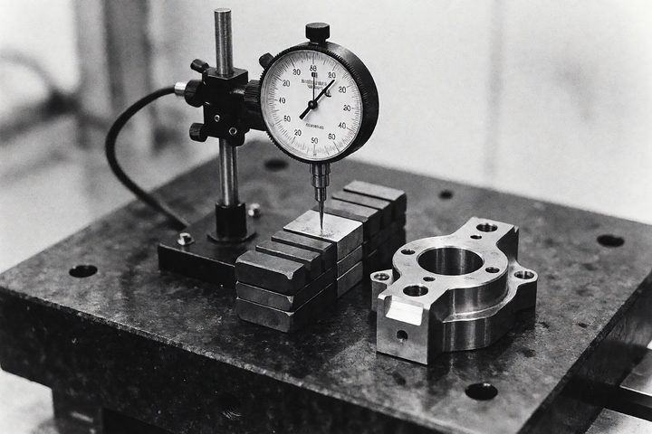<figcaption><div class="name">opm_metrology_00001_</div><div class="tags"><span class="tag">krea2 turbo</span></div><dl><dt>seed</dt><dd>664891269</dd><dt>steps</dt><dd>8</dd><dt>cfg</dt><dd>1.0</dd><dt>sampler</dt><dd>euler</dd><dt>scheduler</dt><dd>simple</dd><dt>size</dt><dd>1536x1024</dd><dt>lora</dt><dd>krea2_darkbrush.safetensors @ 0.8</dd><dt>full</dt><dd>1536x1024 · 2462 KB</dd></dl><details><summary>prompt</summary><pre>A wide 1536x1024 black-and-white fine-grain photograph of a precision metrology setup on a granite surface plate, shot close and slightly from above. Subject: a stack of steel gauge blocks wrung together, a dial indicator on a height stand with its probe resting on the stack, and a machined metal part beside them awaiting inspection; matte granite, ground steel, the indicator&#x27;s dial face catching the light. Style: editorial industrial photography, crisp contrast, deep blacks, fine monochrome film grain, shallow depth of field. Constraints: no humans, no text, no numbers legible on the dial, no watermark, no branding.</pre></details></figcaption></figure>
<figure data-group="krea2-turbo">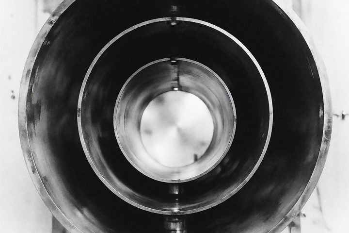<figcaption><div class="name">opm_shielded_chamber_00001_</div><div class="tags"><span class="tag">krea2 turbo</span></div><dl><dt>seed</dt><dd>633530134</dd><dt>steps</dt><dd>8</dd><dt>cfg</dt><dd>1.0</dd><dt>sampler</dt><dd>euler</dd><dt>scheduler</dt><dd>simple</dd><dt>size</dt><dd>1536x1024</dd><dt>lora</dt><dd>krea2_darkbrush.safetensors @ 0.8</dd><dt>full</dt><dd>1536x1024 · 2188 KB</dd></dl><details><summary>prompt</summary><pre>A wide 1536x1024 black-and-white fine-grain photograph looking into the open end of a cylindrical magnetic shield in a quiet laboratory. Subject: nested concentric mu-metal cylinders receding inward, smooth matte metal walls, a soft pool of light at the far end; strong concentric geometry and deep shadow around the rim. Style: editorial architectural photography treatment, crisp contrast, deep blacks, fine monochrome film grain. Constraints: no humans, no text, no watermark.</pre></details></figcaption></figure>
<figure data-group="krea2-turbo">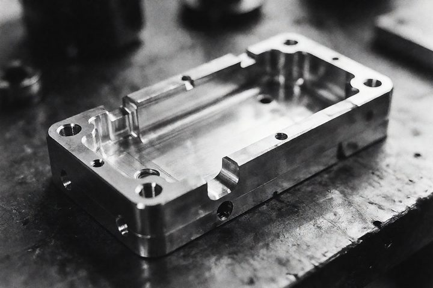<figcaption><div class="name">opm_sensor_housing_00001_</div><div class="tags"><span class="tag">krea2 turbo</span></div><dl><dt>seed</dt><dd>1830830965</dd><dt>steps</dt><dd>8</dd><dt>cfg</dt><dd>1.0</dd><dt>sampler</dt><dd>euler</dd><dt>scheduler</dt><dd>simple</dd><dt>size</dt><dd>1536x1024</dd><dt>lora</dt><dd>krea2_darkbrush.safetensors @ 0.8</dd><dt>full</dt><dd>1536x1024 · 2427 KB</dd></dl><details><summary>prompt</summary><pre>A wide 1536x1024 black-and-white fine-grain photograph of a precision machined aluminium opto-mechanical housing lying on a workbench, shot close and slightly from above. Subject: an anodised rectangular sensor housing with milled pockets, counterbored mounting holes and a long internal channel, its cover removed; crisp machined edges and fine tool marks catching the light. Style: editorial industrial photography, crisp contrast, deep blacks, fine monochrome film grain, shallow depth of field. Constraints: no humans, no text, no watermark, no branding.</pre></details></figcaption></figure>
<figure data-group="krea2-turbo">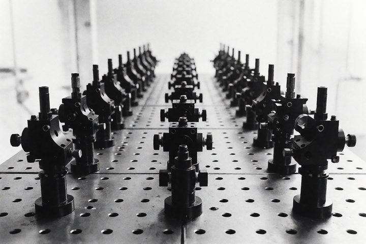<figcaption><div class="name">opm_optics_bench_00001_</div><div class="tags"><span class="tag">krea2 turbo</span></div><dl><dt>seed</dt><dd>1814261721</dd><dt>steps</dt><dd>8</dd><dt>cfg</dt><dd>1.0</dd><dt>sampler</dt><dd>euler</dd><dt>scheduler</dt><dd>simple</dd><dt>size</dt><dd>1536x1024</dd><dt>lora</dt><dd>krea2_darkbrush.safetensors @ 0.8</dd><dt>full</dt><dd>1536x1024 · 2286 KB</dd></dl><details><summary>prompt</summary><pre>A wide 1536x1024 black-and-white fine-grain photograph of a laser optics bench in a research laboratory, looking straight down the length of the bench. Scene: a long optical breadboard with a regular grid of mounting holes, receding into the distance; rows of identical precision optical mounts, kinematic mirror mounts, lens holders and posts standing along it in strong repetition; converging perspective lines toward a bright empty background. Style: editorial architectural photography treatment, crisp contrast, deep blacks, fine monochrome film grain, shallow depth of field falling off with distance. Constraints: no humans, no text, no watermark, no visible laser beam.</pre></details></figcaption></figure>
<figure data-group="krea2-turbo">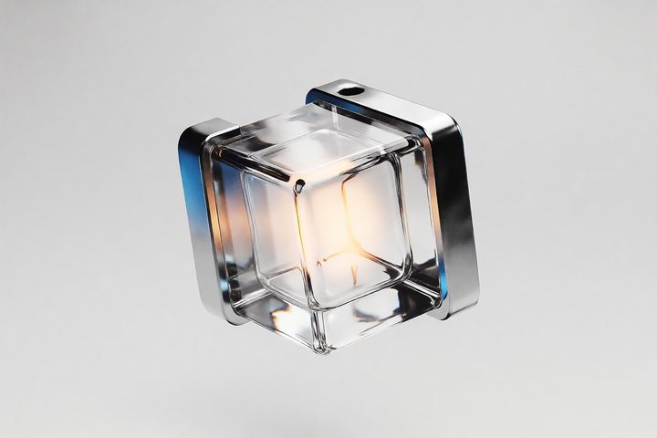<figcaption><div class="name">opm_vapor_cell_00001_</div><div class="tags"><span class="tag">krea2 turbo</span></div><dl><dt>seed</dt><dd>571262454</dd><dt>steps</dt><dd>8</dd><dt>cfg</dt><dd>1.0</dd><dt>sampler</dt><dd>euler</dd><dt>scheduler</dt><dd>simple</dd><dt>size</dt><dd>1536x1024</dd><dt>lora</dt><dd>krea2_darkbrush.safetensors @ 0.8</dd><dt>full</dt><dd>1536x1024 · 1497 KB</dd></dl><details><summary>prompt</summary><pre>A wide 1536x1024 photorealistic 3D studio render of a rubidium vapor cell for an optically pumped magnetometer. Subject: a small precision cuboid cell of clear glass with polished chrome mounting collars on two opposing faces, floating in space, hard straight angular geometry, a faint warm amber glow contained inside the glass. Scene: light dove-gray seamless studio space. Composition: wide landscape 3:2, object centred and occupying about 55 percent of the frame, three-quarter view, gently tilted. Lighting: minimalist premium studio art direction, refined studio lighting, subtle reflected blue on the chrome edges. Materials: physically convincing clear glass, polished chrome, precise hard geometry. No text, no watermark, no extra objects.</pre></details></figcaption></figure>
<figure data-group="krea2-turbo"><figcaption><div class="name">Krea2_turbo_00023_</div><div class="tags"><span class="tag">krea2 turbo</span></div><dl><dt>seed</dt><dd>509865323194329</dd><dt>steps</dt><dd>20</dd><dt>cfg</dt><dd>1.0</dd><dt>sampler</dt><dd>euler</dd><dt>scheduler</dt><dd>simple</dd><dt>size</dt><dd>[&#x27;49&#x27;, 0]x[&#x27;49&#x27;, 1]</dd><dt>lora</dt><dd>krea2_darkbrush.safetensors @ 0.3</dd><dt>full</dt><dd>1472x1472 · 3389 KB</dd></dl></figcaption></figure>
<figure data-group="krea2-turbo">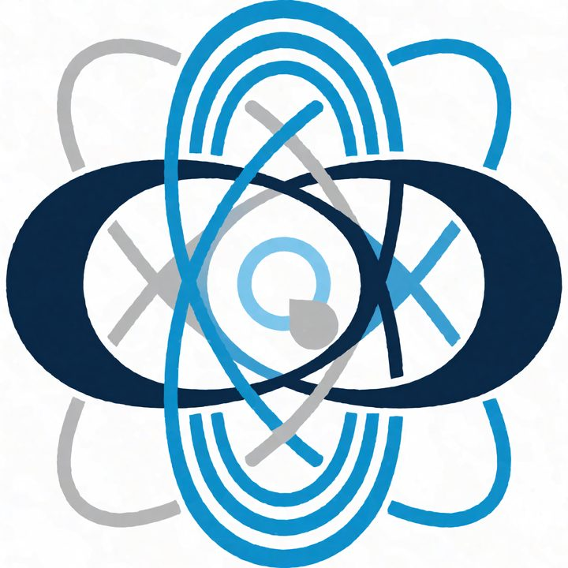<figcaption><div class="name">Krea2_turbo_00022_</div><div class="tags"><span class="tag">krea2 turbo</span></div><dl><dt>seed</dt><dd>57320457644233</dd><dt>steps</dt><dd>20</dd><dt>cfg</dt><dd>1.0</dd><dt>sampler</dt><dd>euler</dd><dt>scheduler</dt><dd>simple</dd><dt>size</dt><dd>[&#x27;49&#x27;, 0]x[&#x27;49&#x27;, 1]</dd><dt>lora</dt><dd>krea2_darkbrush.safetensors @ 0.3</dd><dt>full</dt><dd>1472x1472 · 1307 KB</dd></dl></figcaption></figure>
<figure data-group="krea2-turbo">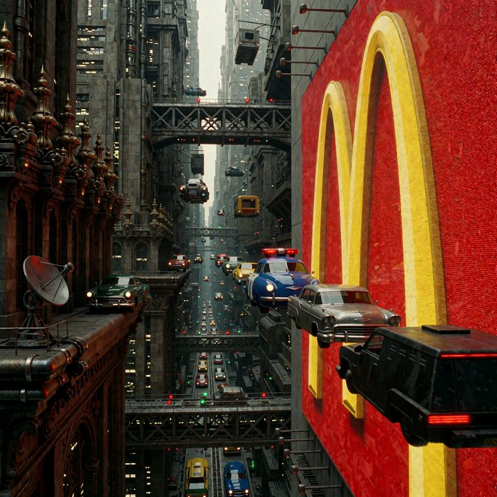<figcaption><div class="name">Krea2_turbo_00021_</div><div class="tags"><span class="tag">krea2 turbo</span></div><dl><dt>seed</dt><dd>97553305500463</dd><dt>steps</dt><dd>20</dd><dt>cfg</dt><dd>1.0</dd><dt>sampler</dt><dd>euler</dd><dt>scheduler</dt><dd>simple</dd><dt>size</dt><dd>[&#x27;49&#x27;, 0]x[&#x27;49&#x27;, 1]</dd><dt>lora</dt><dd>krea2_darkbrush.safetensors @ 0.3</dd><dt>full</dt><dd>1472x1472 · 2984 KB</dd></dl></figcaption></figure>
<figure data-group="krea2-turbo">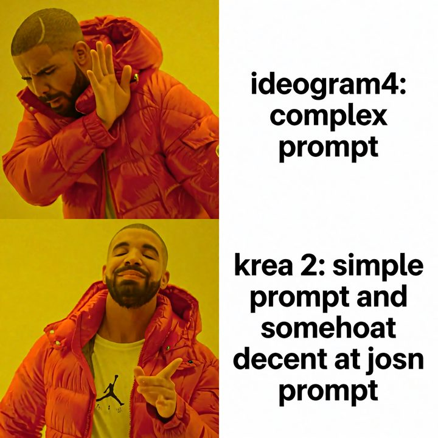<figcaption><div class="name">Krea2_turbo_00020_</div><div class="tags"><span class="tag">krea2 turbo</span></div><dl><dt>seed</dt><dd>463965313981162</dd><dt>steps</dt><dd>20</dd><dt>cfg</dt><dd>1.0</dd><dt>sampler</dt><dd>euler</dd><dt>scheduler</dt><dd>simple</dd><dt>size</dt><dd>[&#x27;49&#x27;, 0]x[&#x27;49&#x27;, 1]</dd><dt>lora</dt><dd>krea2_darkbrush.safetensors @ 0.3</dd><dt>full</dt><dd>1472x1472 · 1662 KB</dd></dl></figcaption></figure>
<figure data-group="krea2-turbo">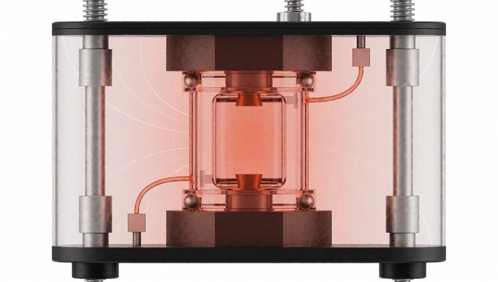<figcaption><div class="name">Krea2_turbo_00019_</div><div class="tags"><span class="tag">krea2 turbo</span></div><dl><dt>seed</dt><dd>537405682954506</dd><dt>steps</dt><dd>20</dd><dt>cfg</dt><dd>1.0</dd><dt>sampler</dt><dd>euler</dd><dt>scheduler</dt><dd>simple</dd><dt>size</dt><dd>[&#x27;49&#x27;, 0]x[&#x27;49&#x27;, 1]</dd><dt>lora</dt><dd>krea2_darkbrush.safetensors @ 0.3</dd><dt>full</dt><dd>1920x1088 · 1497 KB</dd></dl></figcaption></figure>
<figure data-group="krea2-turbo">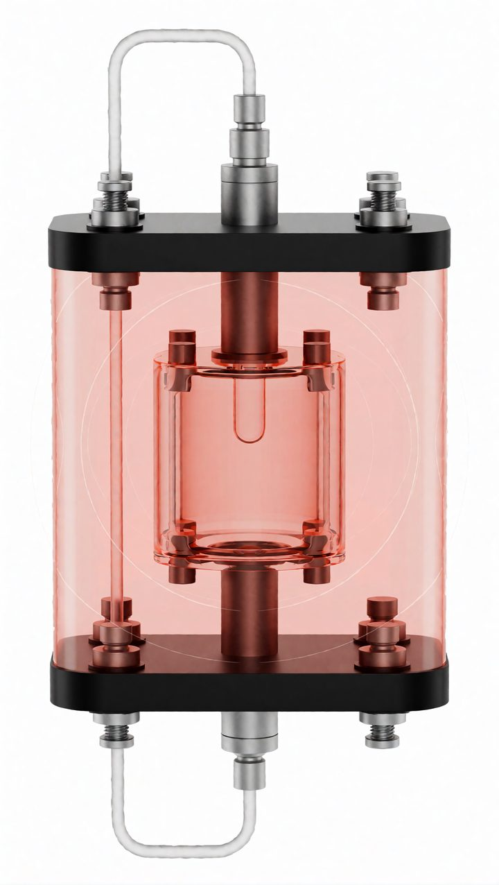<figcaption><div class="name">Krea2_turbo_00018_</div><div class="tags"><span class="tag">krea2 turbo</span></div><dl><dt>seed</dt><dd>637499515635625</dd><dt>steps</dt><dd>20</dd><dt>cfg</dt><dd>1.0</dd><dt>sampler</dt><dd>euler</dd><dt>scheduler</dt><dd>simple</dd><dt>size</dt><dd>[&#x27;49&#x27;, 0]x[&#x27;49&#x27;, 1]</dd><dt>lora</dt><dd>krea2_darkbrush.safetensors @ 0.3</dd><dt>full</dt><dd>1088x1928 · 1344 KB</dd></dl></figcaption></figure>
<figure data-group="krea2-turbo">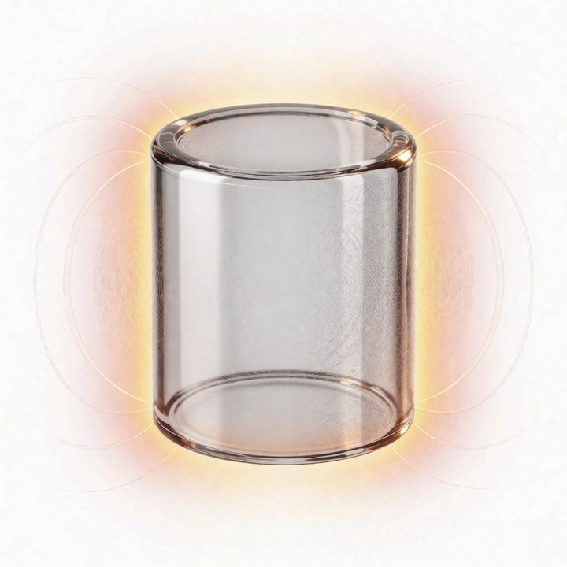<figcaption><div class="name">Krea2_turbo_00017_</div><div class="tags"><span class="tag">krea2 turbo</span></div><dl><dt>seed</dt><dd>967229825092123</dd><dt>steps</dt><dd>20</dd><dt>cfg</dt><dd>1.0</dd><dt>sampler</dt><dd>euler</dd><dt>scheduler</dt><dd>simple</dd><dt>size</dt><dd>[&#x27;49&#x27;, 0]x[&#x27;49&#x27;, 1]</dd><dt>lora</dt><dd>krea2_darkbrush.safetensors @ 0.3</dd><dt>full</dt><dd>1024x1024 · 1046 KB</dd></dl></figcaption></figure>
<figure data-group="krea2-turbo">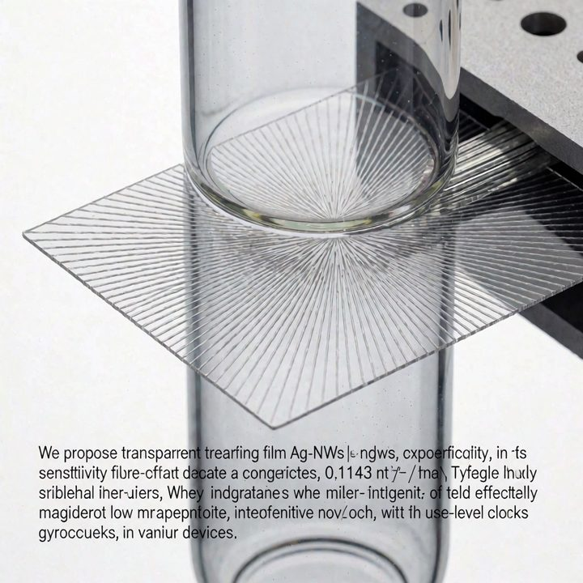<figcaption><div class="name">Krea2_turbo_00016_</div><div class="tags"><span class="tag">krea2 turbo</span></div><dl><dt>seed</dt><dd>743857588116829</dd><dt>steps</dt><dd>20</dd><dt>cfg</dt><dd>1.0</dd><dt>sampler</dt><dd>euler</dd><dt>scheduler</dt><dd>simple</dd><dt>size</dt><dd>[&#x27;49&#x27;, 0]x[&#x27;49&#x27;, 1]</dd><dt>lora</dt><dd>krea2_darkbrush.safetensors @ 0.3</dd><dt>full</dt><dd>1024x1024 · 1295 KB</dd></dl></figcaption></figure>
<figure data-group="krea2-turbo">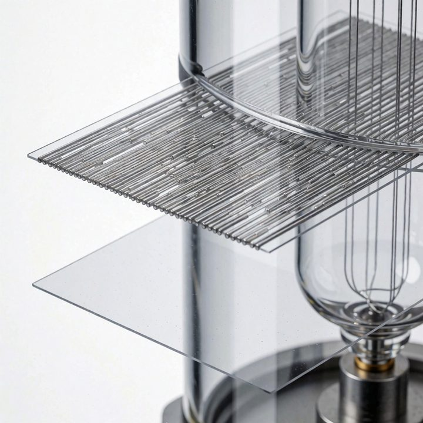<figcaption><div class="name">Krea2_turbo_00015_</div><div class="tags"><span class="tag">krea2 turbo</span></div><dl><dt>seed</dt><dd>23735691403771</dd><dt>steps</dt><dd>20</dd><dt>cfg</dt><dd>1.0</dd><dt>sampler</dt><dd>euler</dd><dt>scheduler</dt><dd>simple</dd><dt>size</dt><dd>[&#x27;49&#x27;, 0]x[&#x27;49&#x27;, 1]</dd><dt>lora</dt><dd>krea2_darkbrush.safetensors @ 0.3</dd><dt>full</dt><dd>1024x1024 · 1249 KB</dd></dl></figcaption></figure>
<figure data-group="krea2-turbo">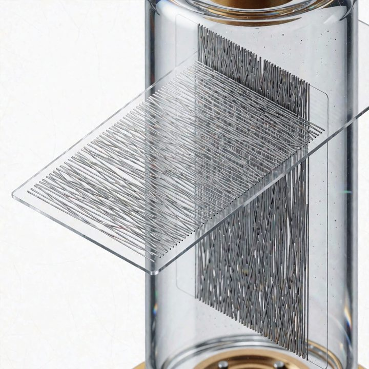<figcaption><div class="name">Krea2_turbo_00014_</div><div class="tags"><span class="tag">krea2 turbo</span></div><dl><dt>seed</dt><dd>940929579663476</dd><dt>steps</dt><dd>20</dd><dt>cfg</dt><dd>1.0</dd><dt>sampler</dt><dd>euler</dd><dt>scheduler</dt><dd>simple</dd><dt>size</dt><dd>[&#x27;49&#x27;, 0]x[&#x27;49&#x27;, 1]</dd><dt>lora</dt><dd>krea2_darkbrush.safetensors @ 0.3</dd><dt>full</dt><dd>1024x1024 · 1449 KB</dd></dl></figcaption></figure>
<figure data-group="krea2-turbo">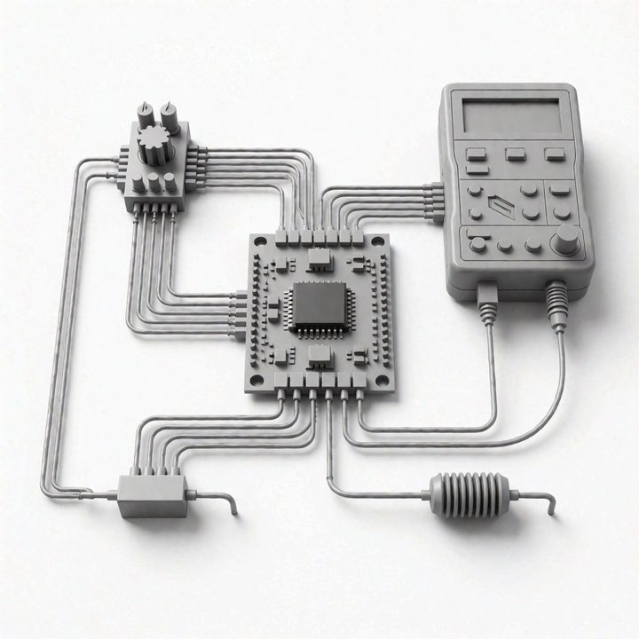<figcaption><div class="name">Krea2_turbo_00013_</div><div class="tags"><span class="tag">krea2 turbo</span></div><dl><dt>seed</dt><dd>867399219476878</dd><dt>steps</dt><dd>20</dd><dt>cfg</dt><dd>1.0</dd><dt>sampler</dt><dd>euler</dd><dt>scheduler</dt><dd>simple</dd><dt>size</dt><dd>[&#x27;49&#x27;, 0]x[&#x27;49&#x27;, 1]</dd><dt>lora</dt><dd>krea2_darkbrush.safetensors @ 0.8</dd><dt>full</dt><dd>1024x1024 · 935 KB</dd></dl></figcaption></figure>
<figure data-group="krea2-turbo">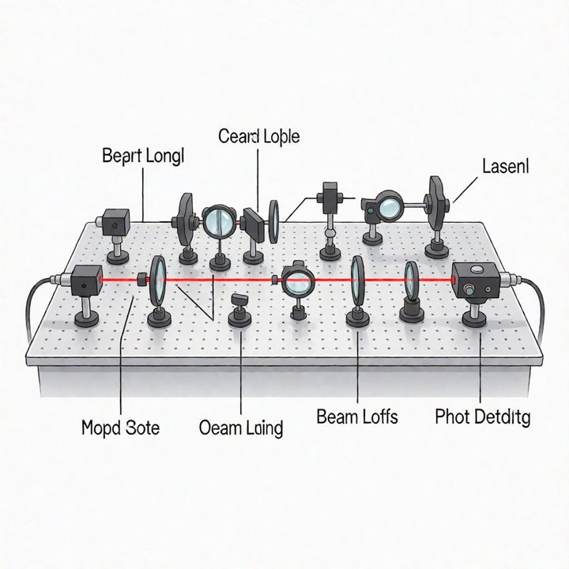<figcaption><div class="name">Krea2_turbo_00012_</div><div class="tags"><span class="tag">krea2 turbo</span></div><dl><dt>seed</dt><dd>123671582055713</dd><dt>steps</dt><dd>8</dd><dt>cfg</dt><dd>1.0</dd><dt>sampler</dt><dd>euler</dd><dt>scheduler</dt><dd>simple</dd><dt>size</dt><dd>[&#x27;49&#x27;, 0]x[&#x27;49&#x27;, 1]</dd><dt>lora</dt><dd>krea2_darkbrush.safetensors @ 0.8</dd><dt>full</dt><dd>1024x1024 · 858 KB</dd></dl></figcaption></figure>
<figure data-group="krea2-turbo">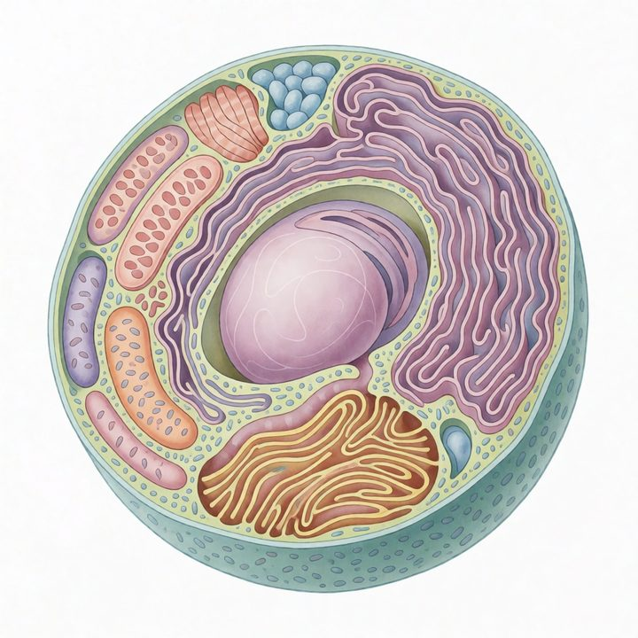<figcaption><div class="name">Krea2_turbo_00011_</div><div class="tags"><span class="tag">krea2 turbo</span></div><dl><dt>seed</dt><dd>107743214363305</dd><dt>steps</dt><dd>8</dd><dt>cfg</dt><dd>1.0</dd><dt>sampler</dt><dd>euler</dd><dt>scheduler</dt><dd>simple</dd><dt>size</dt><dd>[&#x27;49&#x27;, 0]x[&#x27;49&#x27;, 1]</dd><dt>lora</dt><dd>krea2_darkbrush.safetensors @ 0.8</dd><dt>full</dt><dd>1024x1024 · 1393 KB</dd></dl></figcaption></figure>
<figure data-group="krea2-turbo">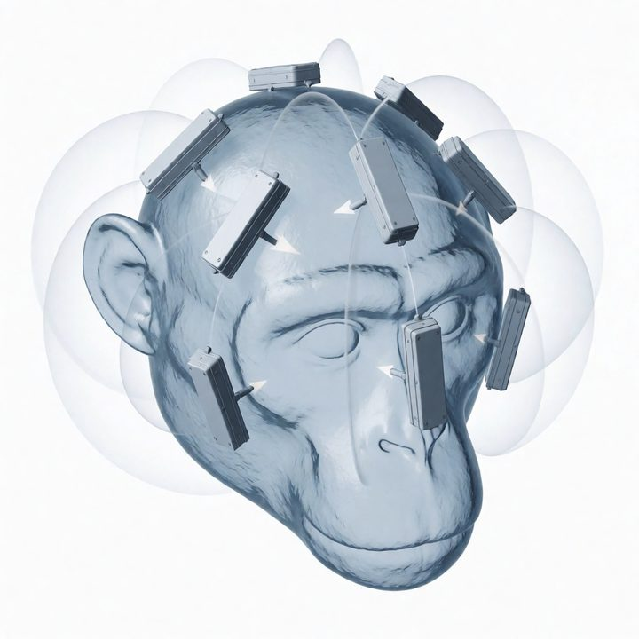<figcaption><div class="name">Krea2_turbo_00010_</div><div class="tags"><span class="tag">krea2 turbo</span></div><dl><dt>seed</dt><dd>1057102968109252</dd><dt>steps</dt><dd>8</dd><dt>cfg</dt><dd>1.0</dd><dt>sampler</dt><dd>euler</dd><dt>scheduler</dt><dd>simple</dd><dt>size</dt><dd>[&#x27;49&#x27;, 0]x[&#x27;49&#x27;, 1]</dd><dt>lora</dt><dd>krea2_darkbrush.safetensors @ 0.8</dd><dt>full</dt><dd>1024x1024 · 966 KB</dd></dl></figcaption></figure>
<figure data-group="krea2-turbo">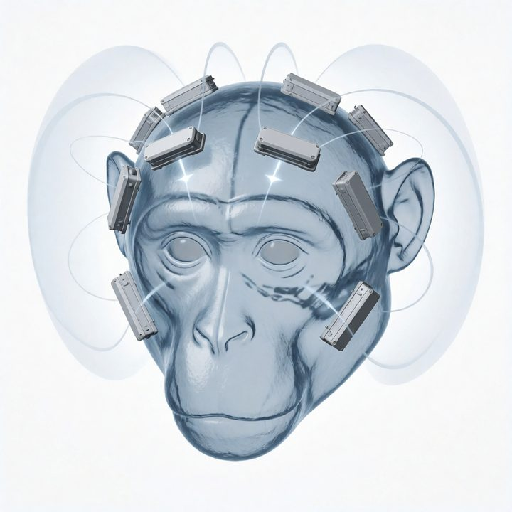<figcaption><div class="name">Krea2_turbo_00009_</div><div class="tags"><span class="tag">krea2 turbo</span></div><dl><dt>seed</dt><dd>609258717139012</dd><dt>steps</dt><dd>8</dd><dt>cfg</dt><dd>1.0</dd><dt>sampler</dt><dd>euler</dd><dt>scheduler</dt><dd>simple</dd><dt>size</dt><dd>[&#x27;49&#x27;, 0]x[&#x27;49&#x27;, 1]</dd><dt>lora</dt><dd>krea2_darkbrush.safetensors @ 0.8</dd><dt>full</dt><dd>1024x1024 · 1061 KB</dd></dl></figcaption></figure>
<figure data-group="krea2-turbo">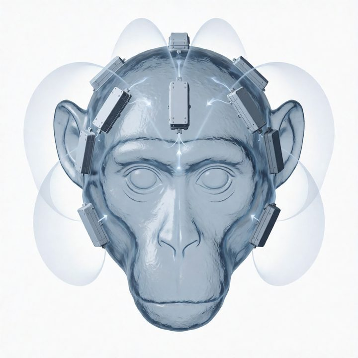<figcaption><div class="name">Krea2_turbo_00008_</div><div class="tags"><span class="tag">krea2 turbo</span></div><dl><dt>seed</dt><dd>90365364010839</dd><dt>steps</dt><dd>8</dd><dt>cfg</dt><dd>1.0</dd><dt>sampler</dt><dd>euler</dd><dt>scheduler</dt><dd>simple</dd><dt>size</dt><dd>[&#x27;49&#x27;, 0]x[&#x27;49&#x27;, 1]</dd><dt>lora</dt><dd>krea2_darkbrush.safetensors @ 0.8</dd><dt>full</dt><dd>1024x1024 · 1044 KB</dd></dl></figcaption></figure>
<figure data-group="krea2-turbo">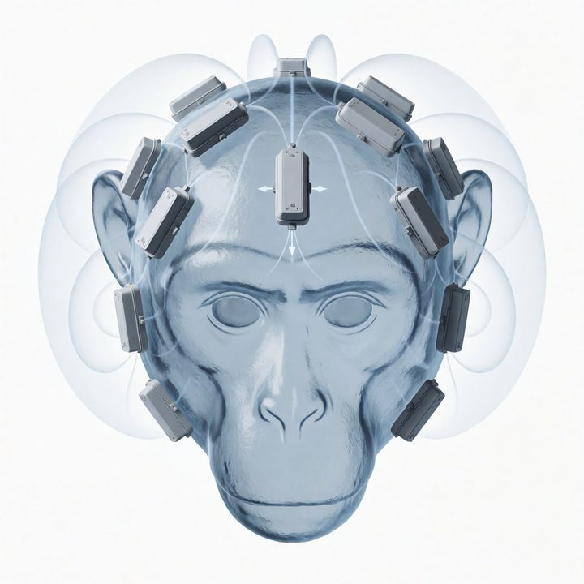<figcaption><div class="name">Krea2_turbo_00007_</div><div class="tags"><span class="tag">krea2 turbo</span></div><dl><dt>seed</dt><dd>394971773224976</dd><dt>steps</dt><dd>8</dd><dt>cfg</dt><dd>1.0</dd><dt>sampler</dt><dd>euler</dd><dt>scheduler</dt><dd>simple</dd><dt>size</dt><dd>[&#x27;49&#x27;, 0]x[&#x27;49&#x27;, 1]</dd><dt>lora</dt><dd>krea2_darkbrush.safetensors @ 0.8</dd><dt>full</dt><dd>1024x1024 · 1060 KB</dd></dl></figcaption></figure>
<figure data-group="krea2-turbo"><figcaption><div class="name">Krea2_turbo_00006_</div><div class="tags"><span class="tag">krea2 turbo</span></div><dl><dt>seed</dt><dd>445924704114847</dd><dt>steps</dt><dd>8</dd><dt>cfg</dt><dd>1.0</dd><dt>sampler</dt><dd>euler</dd><dt>scheduler</dt><dd>simple</dd><dt>size</dt><dd>[&#x27;49&#x27;, 0]x[&#x27;49&#x27;, 1]</dd><dt>lora</dt><dd>krea2_darkbrush.safetensors @ 0.8</dd><dt>full</dt><dd>1024x1024 · 1113 KB</dd></dl></figcaption></figure>
<figure data-group="krea2-turbo">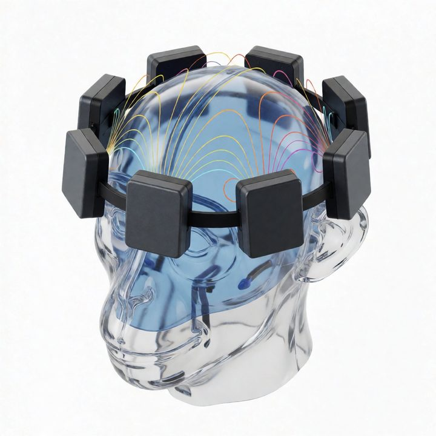<figcaption><div class="name">Krea2_turbo_00005_</div><div class="tags"><span class="tag">krea2 turbo</span></div><dl><dt>seed</dt><dd>978666800510073</dd><dt>steps</dt><dd>8</dd><dt>cfg</dt><dd>1.0</dd><dt>sampler</dt><dd>euler</dd><dt>scheduler</dt><dd>simple</dd><dt>size</dt><dd>[&#x27;49&#x27;, 0]x[&#x27;49&#x27;, 1]</dd><dt>lora</dt><dd>krea2_darkbrush.safetensors @ 0.8</dd><dt>full</dt><dd>1024x1024 · 1093 KB</dd></dl></figcaption></figure>
<figure data-group="krea2-turbo">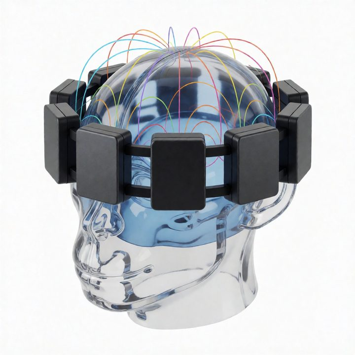<figcaption><div class="name">Krea2_turbo_00004_</div><div class="tags"><span class="tag">krea2 turbo</span></div><dl><dt>seed</dt><dd>720573507325259</dd><dt>steps</dt><dd>8</dd><dt>cfg</dt><dd>1.0</dd><dt>sampler</dt><dd>euler</dd><dt>scheduler</dt><dd>simple</dd><dt>size</dt><dd>[&#x27;49&#x27;, 0]x[&#x27;49&#x27;, 1]</dd><dt>lora</dt><dd>krea2_darkbrush.safetensors @ 0.8</dd><dt>full</dt><dd>1024x1024 · 1059 KB</dd></dl></figcaption></figure>
<figure data-group="krea2-turbo">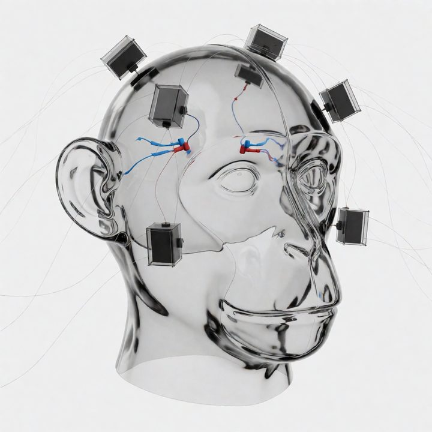<figcaption><div class="name">Krea2_turbo_00003_</div><div class="tags"><span class="tag">krea2 turbo</span></div><dl><dt>seed</dt><dd>560178699106853</dd><dt>steps</dt><dd>8</dd><dt>cfg</dt><dd>1.0</dd><dt>sampler</dt><dd>euler</dd><dt>scheduler</dt><dd>simple</dd><dt>size</dt><dd>[&#x27;49&#x27;, 0]x[&#x27;49&#x27;, 1]</dd><dt>lora</dt><dd>krea2_darkbrush.safetensors @ 0.8</dd><dt>full</dt><dd>1024x1024 · 991 KB</dd></dl></figcaption></figure>
<figure data-group="krea2-turbo">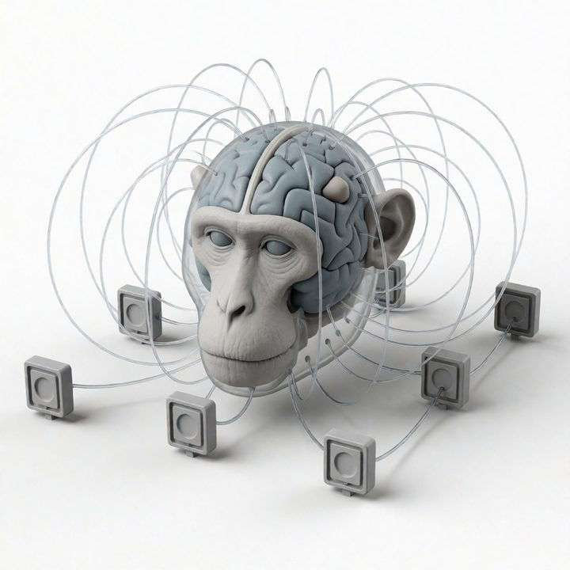<figcaption><div class="name">Krea2_turbo_00002_</div><div class="tags"><span class="tag">krea2 turbo</span></div><dl><dt>seed</dt><dd>726829761676509</dd><dt>steps</dt><dd>8</dd><dt>cfg</dt><dd>1.0</dd><dt>sampler</dt><dd>euler</dd><dt>scheduler</dt><dd>simple</dd><dt>size</dt><dd>[&#x27;49&#x27;, 0]x[&#x27;49&#x27;, 1]</dd><dt>lora</dt><dd>krea2_darkbrush.safetensors @ 0.8</dd><dt>full</dt><dd>1024x1024 · 1028 KB</dd></dl></figcaption></figure>
<figure data-group="krea2-turbo">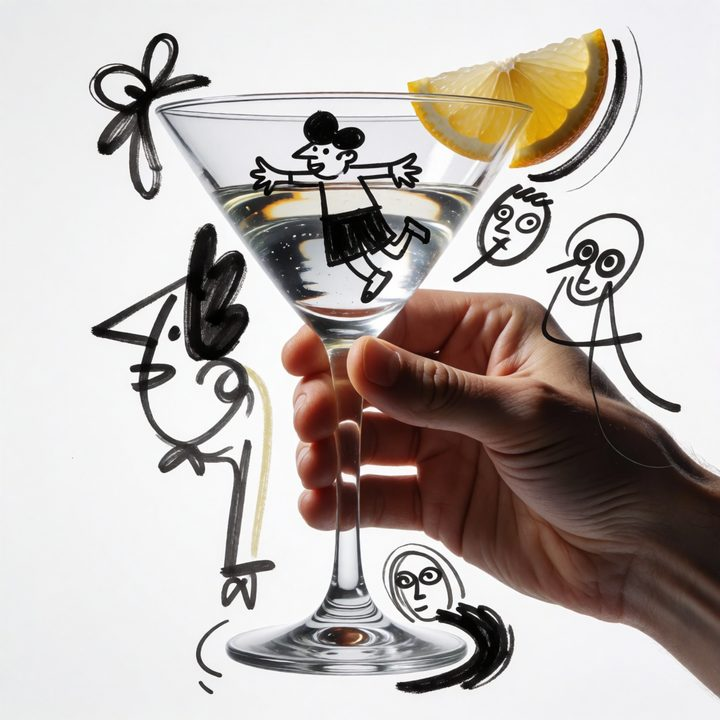<figcaption><div class="name">Krea2_turbo_00001_</div><div class="tags"><span class="tag">krea2 turbo</span></div><dl><dt>seed</dt><dd>735915477938686</dd><dt>steps</dt><dd>8</dd><dt>cfg</dt><dd>1.0</dd><dt>sampler</dt><dd>euler</dd><dt>scheduler</dt><dd>simple</dd><dt>size</dt><dd>[&#x27;49&#x27;, 0]x[&#x27;49&#x27;, 1]</dd><dt>lora</dt><dd>krea2_darkbrush.safetensors @ 0.8</dd><dt>full</dt><dd>1024x1024 · 1178 KB</dd></dl></figcaption></figure>
</div></main>
<footer>Rebuild with <code>python3 scripts/build_gallery.py</code> after any new batch. Judgements (installed slot, refusal, notes) live in <code>assets/gallery/manifest.json</code> and are preserved across rebuilds.</footer>
<script>
const buttons=[...document.querySelectorAll('nav button')];
const cards=[...document.querySelectorAll('figure')];
function apply(f){
  cards.forEach(c=>{c.hidden = f!=='all' && !c.dataset.group.split(' ').includes(f);});
  buttons.forEach(b=>b.setAttribute('aria-pressed', String(b.dataset.filter===f)));
  try{localStorage.setItem('gallery-filter',f)}catch(e){}
}
buttons.forEach(b=>b.addEventListener('click',()=>apply(b.dataset.filter)));
let start='all';
try{const s=localStorage.getItem('gallery-filter');
    if(s&&buttons.some(b=>b.dataset.filter===s))start=s}catch(e){}
apply(start);
</script>
